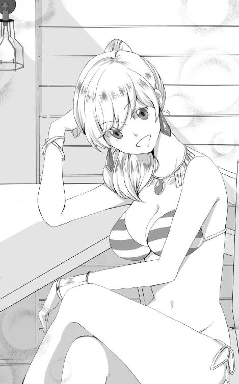
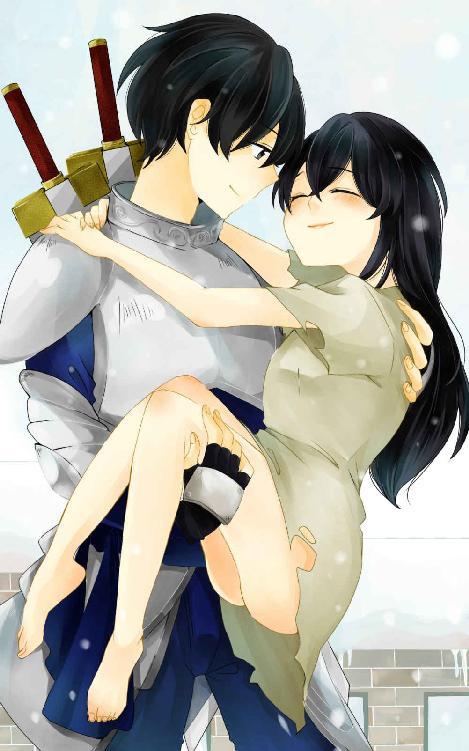
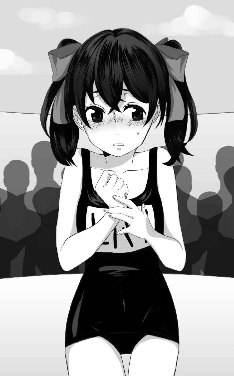
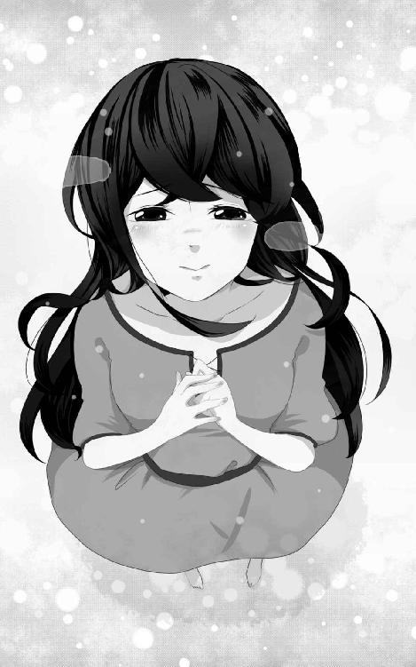
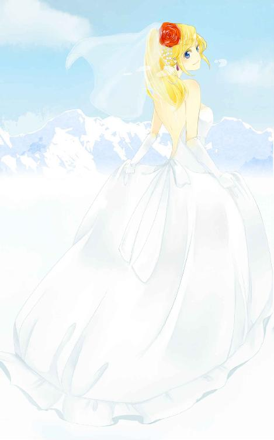
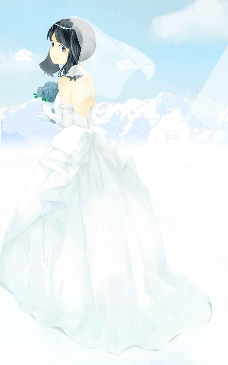

| 白雪の記憶【Amazon限定】 | |
| 因幡雄介 | |
| syousetuseisakusyo (2018) | |
白雪の記憶
因幡雄介 著
【ネットに接続されます】
＊本作品はフィクションであり実在の人物・団体等とは関係ありません。
＊本作品の著作権は作者にあり、引用を超える無断転載は著作権法の違反となります。
＊本作品の全部または一部を無断で複製、転載、配信、送信、ホームページに転載することはできません。
＊本作品を示すイメージ画像は、予告なく変更される場合があります。
＊本作品は縦書きでレイアウトされています。
＊本作品はリーディングシステムにより表示に差が認められることがあります。
＊本作品のクレジットなしカラーイラスト、挿絵は、ダブルタップ、あるいはピンチして広げると、拡大して鑑賞することができます。
＊本作品の表紙となるクレジットありカラーイラストは、解像度を低くして制作しています。
バスタード
二本のバスタードソードを持つ賞金稼ぎの少年。記憶がないため本名は不明。
常人を超えた身体能力と深い傷を負ってもすぐに治る再生能力がある。
ヒバリ（表紙のキャラクター）
奴隷だったが、バスタードに助けられ一緒に住むことになった少女。
思春期のためか反抗的。
シュンカ
バスタードと一緒に組む賞金稼ぎの少女。
敵に攻撃されると、鎧が脱げてビキニになる。
キサメ
バスタードの使い魔。
黒ヒョウタイプの魔物。メス。
――臆病者は残酷である。
ゲイ「寓話」より
青い鳥がいた。
羽は鮮やかな青。脇腹はきれいな黄色。クチバシの周りは白い。つぶらな黒い瞳が見つめている。
ルリビタキだ。小鳥の名前を思い出した。鉄柵の窓の間から何も鳴かず、ぼくをながめている。
窓の外は白い。何もない色。何一つ混ざらない、純粋で、無垢な純白。
ぼくはあおむけに寝ている。体は動かない。首や手や足に、冷たいものが絡まっている。
意識は遠い。まぶたが重い。気配がとなりでした。敵なのか、味方なのかもわからない。
「完全に記憶............自分の名前............なる............」
「かまわん............望んだ............俺はただ............付き合ってやるだけさ」
「ウキャキャ............人格が復活............万事うまくいく............」
「そうだな............いくといいな。さあ――苦しむがいい」
獣の甲高い声が聞こえる。もうひとりは誰だったか。
呼吸が一定のリズムを刻み始めた。意識をたもてない。両目を閉じて、暗い闇の中に身を委ねていた。
＊
耳に、何かが動く音がした。
目を開けると、黒い固まりのような虫が頬をゆうゆうと歩いている。手をのばし捕まえる。ただの地面だと思っていたのか、あわてて逃げようとする。表面の油が小さな光を反射した。
興味をなくし放った。虫は闇の中に逃げていく。
「うっ......」
上半身を起こそうとすると、首が何かにひっかかった。手で探っていくと、冷たいものがふれた。不快になりおもいっきりひっぱると、簡単に取れた。
首の部分の違和感はなくなったけど、手足に何かある。両手をひっぱると、それも簡単に音をたてて壊れた。鉄の輪だった。
両足には鎖のついた鉄の輪がある。片手で輪を持ち、にぎりしめ砕く。もう一方の鉄の輪も簡単に砕けた。
台の上からおり周りを見回す。牢屋だった。石の台の上に寝転がっていたようだ。
見たことのある鉄柵の窓。外は暗い。
牢屋の出入り口である、鉄のドアが閉められている。押すと、鍵が壊れ簡単に開いた。
壁は黒いレンガでできている。光は何もない。目が闇に慣れてきて、牢屋の外がわかってきた。
縦に長い鏡があった。自分の姿がよく見える。細身で筋肉質。髪と瞳は闇と同化するぐらい黒い。容姿は眉が柔らかい曲線を描いており、目が大きい。笑うと優しい表情になるだろう。
十代の少年のように若かった。服は着ておらず裸。
鏡の周りにはいろんなものが置かれていた。
とげつきの首かせがある。重量は五キロぐらいあり、とげは骨に食い込む鉄製のやつだ。
鉄のむちがある。あれでたたかれれば、皮膚がめくれ、筋肉が見られる。
あのゆりかごは、つり拷問と呼ばれている。滑車、鉄のベルト、三角錐の木製の台があり、下から責めることができた。三角錐の先端が、肛門や膣に激しい痛みを与える。
頭痛がする。違和感に気づいた。
どうして、こんなに拷問器具にくわしいのだろう？
あれは頭蓋骨を粉砕する冠。
あれは足を砕く靴。
あれは皮膚を切り裂くハサミ。
拷問器具をよく知っている。
金属の表面に、どす黒い液体がつき乾いていた。床には赤黒いものが流れ、排水溝に続いていた跡がある。どこからか、腐った肉の臭いがただよってきた。
何かの気配がした。ギロチンの上に小さいものがいる。
青い鳥、ルリビタキだ。剥製のように、羽も開かず、鳴き声も上げず、魚のような無機質な瞳でじっと見つめられている。
恐怖を感じた。あんなに小さい鳥なのに、怖くてしかたがなかった。
逃げだすように、石の階段を上がり続ける。石は冷たい。
はだしだった。肌が寒い。どうして裸なのか理由がわからない。
わからないという言葉が頭をグルグル回り、次から次へと疑問がわきだす。
なぜここにいるのか？
どうしてここにきたのか？
ぼくは何歳なのか？
男なのか？ 女なのか？
名前は？
ぼくは、誰だ？
気づいたら外にでていた。どこなのか知るのが怖くなり走り続けた。
暗い森だ。木の隙間を抜けていく、風が異様な音を立てる。太陽がなくても目はよく見えた。
体力はあり余っている。枯れた木の枝や鋭い葉で、皮膚が傷ついても再生していく。小石が足裏に食い込んでも痛みを感じない。
となりの木々の間から、白い光が見えた。走っているぼくに並走している。幽霊のように揺れる光は、小さな女の子だった。
女の子は、けわしい顔つきでにらんでくる。怖くなり走る速度を上げた。少女はいつの間にか消えていた。
頬に、冷たいものがつたう。泣いていた。涙が流れ続けた。
走りながら、誰かに聞きたくてしかたがなかった。
教えてほしい。ぼくは、人間？
バスタードは雪降る町を歩いていた。
雪は石畳の道に積もっている。柔らかく、丈の長いブーツで歩いても足が埋まった。足跡がくっきりと地面に残っている。
人は少ない。こう寒いと活動的にならないから、家の中にこもっている。レンガ造りの壁の窓から、暖かそうな暖炉の灯りがちらほら見えた。
曇った空を見上げた。灰色で埋め尽くされている。雪が空にも積もっているようだった。
――拷問室からでてもう数ヶ月か......。
背中に装着している、二つのバスタードソードが防寒着の中で暴れている。長い剣身をしているので、背中に身につけたほうが使い勝手がいい。
「雪は降りやまないようだね」
「そうみたいだナ」
相方であるシュンカがとなりで滑舌の悪い返事をする。
「ねえ一つ聞いていい？」
呼ぶと立ち止まってくれた。
「何ヨ？ バスタード」シュンカは背が低いので見上げてきた。
バスタードという名前はシュンカが適当につけてくれた。年齢も十三歳だと彼女に決められた。たぶん正解じゃないけど、記憶はいまだに回復しないし、こだわりがなかったので別にいいか。そんなことよりシュンカの格好だ。
「どうして、ビキニなの？」
シュンカは白と黄色のしまビキニを着ていた。レモンのような金髪に、瞳は碧い。肌は白いので、よけいに黄色の髪とビキニが目立った。体格はきゃしゃで胸もでていない。髪型はひもでくくったポニーテールだった。年齢は十三歳と若い。
ガタガタ震えると、シュンカは赤くなった鼻から鼻水をたらした。雪の降る日にビキニで歩いている女の人はいない。丸出しのヘソが滑稽にゆがんでいる。
「さっき、酔っぱらったオッサンに攻撃されて、防寒着と鎧が脱げてしまったネ」
シュンカは、人に攻撃されると鎧が脱げるという癖があった。最後の砦であるビキニを着ているようだ。誰にも理解できない病気だろう。
「ちょっと当たっただけじゃないの？ どうして防寒着まで脱げるの？」
シュンカと組んで間もないので、病気を理解できていない。
ぼくたちは賞金稼ぎだ。フリーなのでハンターギルドには所属していない。魔物退治を主としているので武器を所持していた。
「めちゃくちゃ寒いヨ。意識が遠くなるネ」シュンカは鼻水をすすりながら声を震わせる。
「脱げた鎧と防寒着は？」
「盗まれちっタ」
「死ぬよ。こんな雪の中で」
心配よりもあきれが勝った。ビキニのトップの位置を指で直しているけれど、その程度でこの寒さは防げない。ぼくは防寒着を脱いだ。
「それは困るネ。先に宿に行ってるヨ。場所はわかるナ？」
シュンカは走るかまえをした。つらくなってきたようだ。
「うん。さっき人から聞いた場所だよね」
「じゃ、行くヨ。お前も鎧を脱がされないようにしろヨ」
「普通脱げないよ。人に当たっただけで」
彼女にそっと、脱いだ防寒着を着せてあげた。
シュンカは目を丸くすると、赤い頬のまま見上げる。ニカッと笑い宿屋まで走っていく。雪ではしゃぐ犬のような元気な姿にほほ笑んでしまった。
「さてと、のんびりむかおうか」
胸の前で右手を広げてみる。手のひらに、雪が積もっていく。指先に落ちた、白い氷の塊をじっとながめる。
細い枝が六つあり、花のように咲いている。樹枝状の結晶だ。とても美しく、時間がたつのも忘れて見つめてしまった。
「きれいな雪だな......うっ？」何かが後ろの太ももに当たった。
「あうっ？」少女の声がした。
後ろをむくと、黒い髪に、黒い瞳をした少女が雪の中で倒れている。小柄なので六歳ぐらいか。ぼくが見えずぶつかってしまったみたいだ。
「ううっ......」
固い壁ではなかったものの、走っていたため衝突のダメージがあったのだろう。少女は素足で、服装は質素でボロボロ。寒さに耐えられる格好じゃない。
「待てこのガキ！」
頭のはげた中年男がのっしのっしとやってくる。黒ひげに、眉間にシワをよせ、頭にきているのか表情は鬼のようにけわしい。
「追いついたぞ！ このチビがっ！」
「がふっ！」
中年の男は少女を蹴り飛ばした。小柄で体重が軽いからか、少女は少し空中に浮いた。ようしゃのない蹴りに、苦しそうにお腹を手で押さえている。
「おらっ！ 立て！ お客さんが待ってんだろうがっ！」
「ああっ、嫌......」
「奴隷の分際で、生意気言ってんじゃねぇ！」
セミロングの髪をつかむと、中年の男は少女をひっぱっていく。髪が抜けても、力の加減はしていない。
「嫌だぁ！」
少女は泣きわめいて抵抗した。スカートがはだけ、細い足にいくつもむちでたたかれた傷がある。何をされているのかわかってしまった。
「何見てんだよ！」
中年の男は、ぼうぜんと見守っていたぼくに眼を飛ばした。ビクリと震え上がり目をそらす。
――いっ行かなきゃ......。
恐怖を感じ、コソコソと逃げる。
――こんなこと、よくあることだ。ぼくには何もできない。何もできないんだ......。
助けてはあげたい。だけど、少女は奴隷だ。それは彼女の運命。頭の中で、言い訳が並べられる。
「嫌だよぉ！ もう痛いの嫌なのぉ！」
「うるせぇ！ 親のいねぇお前を育ててやった、恩をあだで返すつもりかぁ？」
「帰りたくないっ！ 嫌い嫌い！ みんな大っ嫌い！」
少女は激しく抵抗し、髪をつかんでいる男の腕を引き離そうとする。
「やかましいっ！ このっ！」
太い腕を振り上げると、男の拳が少女の顔にむかって飛んだ。少女は本能的に手で防御している。振り下ろされた拳を受け止めていた。
「あん？」
男の拳を片手でにぎりしめていた。にらみつけられ、瞳が泳ぎ涙がでそうになる。それでも男の手を離したくなかった。
「あっ、あのっ、あのっ、そんなことをすると、その子がかわいそう......」
「はあっ？ 聞こえねぇよ。もっと大きな声でしゃべりやがれっ！ ......っつ？」
手を強引に振りほどくと、男は胸につかみかかろうとした。
恐怖で、手で顔を防御したけど、男の拳は飛んでこなかった。おそるおそる目を開けると、あぜんと何かを見つめている。目線の位置は二つの剣のグリップだった。武器を見て冷静になってくれたようだ。
はげた男は、うさんくさそうにぼくの足元から頭までながめていた。
「そのっ、その子がかわいそうだから......」言葉をつまらせながらも男を説得する。
雪の上にちょこんと座っている少女は、細い目で見上げていた。
はげた男はぼくの気弱で臆病な性格を見抜いたのか、威嚇するようにうなり、
「じゃあ、お前がコイツを買ってくれるのかよ？」
「えっ？ あっあの。お金ならこれだけしかないです」
ポケットからお金を持つと男に差しだす。宿代をシュンカに預けているので微々たる金額しかない。
男はかっとなったのか、お金をたたき落とし、
「これじゃ足りねぇよ！ ふざけてんのか！」
「いっいえ、そんな」
「ったく、こんなガキ助けてどうしようってんだよ？ どうせこの雪じゃ死んじまうだろ？ 俺が助けてやろうってんだよ！ このガキを！」
男は少女のお腹を蹴った。
「ぎゃふっ！」少女は胃液を雪にまき散らしうずくまる。
「ははっ！ こうやって痛めつけねぇと言うこと聞かない......げっ？」
調子に乗ってきた男の息がつまった。ぼくの指が首に食い込んでいるからだ。
「お願いです。やめてください」感情を殺し訴える。
「うっ、うるへぇ......それよりも......はなひやが......があああっ」
はげた男が抵抗する。しかたなく持ち上げた。引き離そうとぼくの腕をにぎりしめてくるけど、赤子みたいに弱い。
「お願いだ。やめてくれ」
「がっ......」
「もうそんなもの見せないでくれ」
「............」
必死で男を説得していた。顔は見ないように目をそらしているけど、言いたいことはすべて言うつもりだった。ズボンをひっぱられた。
少女が大きな瞳をパチクリさせ、
「ねえ、死んじゃうよ？」
「えっ？」
男を見上げた。赤い舌をだし口から泡をふいている。
あわてて首を離した。雪に倒れた男は冷たさと痛みで意識が戻り、喉を押さえて一心不乱に呼吸する。
「ごほっ！ ごほっ！」
「ごっごめんなさい。そんなつもりじゃ......」
「わっわかったよ。そいつはやるよ。化け物めっ！」
男は落ちていた金を拾うと、少女を見ることなくさっさと逃げていく。
寂しく悲しい気持ちになった。化け物と呼ばれたのは初めてじゃない。多くの賞金稼ぎに化け物だとののしられてきた。シュンカは、高額な賞金を稼げる能力があるから嫉妬されていると慰めてくれたけど。
「ぼくは、化け物なんかじゃない......ぼくは......」
両目から涙が流れた。
冷たい雪が降り積もり、ぼくを隠してほしい。体がとても冷える。涙は熱く雪を溶かしてしまう。
ふと、見上げている少女に気づく。穢れなき黒い瞳がぼくを見つめている。おびえの色を何もだしていない。パッチリとした瞳が、きょとんとまばたいている。
気分が晴れ、涙をゴシゴシとぬぐった。
「大丈夫？」腰を下ろして目線を合わせる。
「うん。お兄さんも平気？」少女はあどけない声色で慰めてくれた。
「平気だよ」
にっこりと笑ってみせた。
少女の顔は赤く腫れている。さっきの男に殴られたのだろう。足は凍傷で真っ赤になっていた。
「そこは冷たいだろう？ おいで。ぼくに抱きついて」
「えっ？ いいの？」
「うん。いいよ」
少女はおそるおそるぼくの首に腕をやった。見知らぬ男だから警戒されると思ったけど、信用してくれたようだ。腕でお尻を持ち上げそのまま立ち上がる。
「きゃ！」
少女は驚いて小さく悲鳴を上げた。近くに顔がくると、血と汚物の臭いがした。ろくに食べさせていないのか、体重は軽い。
「宿屋に行こうか。そうだ。一緒にお風呂に入ろう。体、洗ってあげるよ」
「お風呂？ 冷たい？」
少女は嫌な顔をした。
冷たい？
言葉がよくわからず、首をかしげてしまう。
「ううん。あたたかいよ」
「へぇ。入ったことない」
少女の言葉に驚く。どんな環境で彼女は育ったんだろう。想像するのが怖い。
「そっか。きっと、気持ちいいよ」
「へぇ。楽しみぃ。えへへ」
少女は天使のようにほほ笑んだ。心がすっと楽になる。名前をまだ聞いていなかった。
「君の名前は？」
「ヒバリ」
少女は素直に答えてくれる。
「ヒバリ......か。いい名前だね」
「お兄さんは？」
「ぼくはバスタード」
「バスタード？」
「うん」
「へぇ。変わった名前」
ヒバリは正直に言ってくれる。
「ふふっ、そうだよね。変わった名前だ」
本音で返してしまった。
ヒバリを気に入っていた。このまま連れて帰ることにためらいはなかった。シュンカはなんて言うか、悪い想像をしたけどかまわない。ぼくが彼女を守ってみせる。
争ってできた雪のくぼみが、空から降る白い雪で消されていた。
一
バスタードは知らない場所に立っていた。
格好は裸。はだしでがれきの上を歩いている。赤い水が目の前に広がり、人間の手や足が飛びでていた。
赤くさびついた風見鶏が悲鳴のようにうなっている。とがった塔の屋根には、串刺しになった人間がいた。
両腕に誰かが乗っていた。胸に穴のあいた少女だった。体液がポタリ、ポタリと赤い水に落ち波紋を作る。
誰かが笑っていた。
ケラケラ。ケラケラ。
笑い声の主を探した。空は黒い雲でおおわれ、青白い雷が鳴り響く。熱い風が皮膚を焼いた。薄明かりのなかで、まだ笑い声は続く。
ケラケラ。ケラケラ。
「はっ！」
目を覚ますと、上半身が起きていた。ベッドが体中からでた汗を吸収している。窓から太陽の光が入り、部屋の様子など知らない小鳥たちがのんきに歌っていた。趣味で集めている本が、本棚から落ちていたけど気づかなかった。
「また、あの夢」
額に手をやった。異常な高熱を持っている。しばらくすれば治ってしまう。
「最近、よく見る......どうして？」
手を頬にやる。熱い滴が落ちてきた。手を離し目の前に持っていくと、小さな水滴だった。
「泣いてたんだ」
大きくため息をついた。悪夢にうなされる。仕事のさいちゅうは夢を見ないのだけど、自宅に帰ると必ずあらわれた。
「バスタード！ おはよう！」
愛らしい声がして、ドアが大きくノックされた。あわてて涙をぬぐう。間隔をおいてまたノックされる。
「あっ、うん。おはよう」
答えると部屋のドアが開いた。ひもで黒髪を結わえ、ツインテールにした少女が立っている。成長したヒバリだ。
「起きてたんだ？」ヒバリはお腹で両手を合わせ、恥ずかしそうに近づいてくる。
あれから四年たち、奴隷だった少女はぼくと一緒に住んでいた。年は十四歳となり、背は少しのびたけどまだ小柄だった。体格はきゃしゃで、昔よりもふっくらとした顔つきになっている。白いエプロンをつけ、幼い容姿から変わらない天使のような笑みがこぼれた。
「朝ご飯できたよ。食べようよ」
「うん。すぐに行くよ」
「......バスタード」ヒバリは顔をイチゴのように赤く染めながら唇を近づけ、
「チュ！」
頬にキスをする。
目をパチクリさせた。
「えへへ。早くきてね」耳元でささやくと、ヒバリはさっさと部屋からでていってしまった。
ぼうぜんと見守っていた。キスされた頬を指でふれる。そこの部分だけあたたかい。
「ああいうの。どこからおぼえたんだろ？」
複雑な気持ちになりながらも、ニヤけてしまっていた。
一階に下りて台所にむかうと、大きな猫がお座りをして待っていた。黒いヒョウだ。白いひげを数本左右にはやし、黒い尻尾を丸くしている。
「おはようございます。バスタードさま」ヒョウが人の言語をしゃべり、あいさつした。
「あっ、おはよう。キサメ」あいさつを返す。
キサメは使い魔だ。普通の動物ではなく魔物。ぼくとヒバリを主人と認識し、絶対の服従を誓っていた。猫のような気まぐれな行動は取らない。ぼくにふさわしくないほど忠実な部下だ。
「キサメ。朝ご飯だよ。お食べ」
ヒバリはお皿に羊の脂肉を乗せ、小さな机に置く。ぼくが作ったものだ。キサメとはお友達感覚で話している。
「ありがとうございます。ヒバリさま」
キサメは丁寧にお礼を言うと肉を頬張る。
満足気にながめると、ヒバリは料理が置かれた机の近くにあるイスに座り、
「さっ、食べようよ」
「うん」
対面する形でイスに座った。
机には、パンとスープが置かれてある。スープから甘い匂いがして、羊の肉やじゃがいもが浮いていた。パンは丸い。
「このパン角がないね？」
堅いパンを持ち上げ、めずらしそうに見てしまう。
「丸くしたの。かわいいから」
「うん。かわいいね」
コクリとうなずきパンをスープにつけ食べる。ヒバリもパンを手に取り、スープにつけて食べた。肉汁が口の中で広がる。
「おいしいね。料理が上手になったよ」
「そうでしょ？ 町に住んでるトドおばさんに習ったの。たまにこの家に来るんだよ」
ヒバリはアグアグ食べながら言う。
家は、町とは離れ山奥に建てられていた。ぼくが建てた家だ。人をよせつけないようにしたつもりだったけど、ヒバリがきてから雰囲気が変わり、ときどき町の人が来るようになった。トドおばさんとは、羊飼いの亭主がいる町の主婦だ。
「えっ？ その、キサメは......」
「隠れてもらってる。気づかれてない」
「ふう。そっか」
申し訳なさそうにキサメを見下ろした。他人から見れば猛獣だ。しかも魔物なのだから、見つかればややこしい事態になるのは必須だった。
キサメは何食わぬ顔で肉をかみちぎっている。
「ねえバスタード。私ね。町の結婚式を見に行ったの。きれいだったぁ」
「へぇ」
「いいなぁ。ああいうの。いいなぁ。してみたいなぁ」
ヒバリはパンを置き、机に肘をつき、アゴを両手に乗せると、キラキラとした瞳で結婚式を妄想していた。
「うん。そうだね」関心がないので、肉を口に入れかみ砕く。
「いいなぁ。したいなぁ。結婚式」
ヒバリはぼくを見つめ、頬を赤くさせて妄想を楽しんでいた。
視線がどういう意味なのかはわからない。女の子が成長すると、想像力がたくましくなるのだ。この状態になると、「ヨダレがたれてるよ？」と注意しても聞いてくれない。
家の玄関がノックされた。誰かきたようだ。
「あっ、おばさんかも。キサメ」
「了解した」
キサメはさっと二階へかけ上がる。ヒバリは確認すると玄関にむかった。また扉がノックされる。
「はいはい！ すぐに行きます！」ヒバリは声を張り上げている。
しっかりしてきたなと感心した。
ヒバリがここにきたときは、元奴隷のときに習ったのか家事はうまかった。親がいなかったせいか甘えん坊で、一日中ぼくから離れなかった。ぼくがいないときもこの家を守っているキサメにくっついてばかりで、ひとりで行動しようとしなかった。
それが町に出向いたり、料理を習ったりと積極的に行動している。どんどん成長しているのだ。喜ばしかったけど、少し寂しいことでもあった。
大きな物音と女の悲鳴が上がった。ドアが乱暴に閉められ、ヒバリが走ってくる。
「どっどうしたの？」食べ物を口にふくんだまま目を丸くしてしまう。
「お化けがきた！ 逃げて！」
ヒバリが腕に抱きついてきた。柔らかい感触がして、お布団の匂いがする。
「誰がお化けヨ！」
シュンカが赤い鼻を押さえながらやってきた。年は十七歳。見ないうちに、背ものび、体つきが良くなっていた。胸も大きくなり、ＡカップからＥカップに昇格している。髪型は変わらずポニーテールで金髪をひもでくくっていた。言語のほうは別の大陸からやってきて数年になるけど、いまだになまりがとれていない。
ふたりの成長と比較しても、ぼくはまったく変わらなかった。背丈や顔つき、体格も変化はない。ただ性格が少し明るくなった気がする。
「あれ？ どうしたの？」
賞金稼ぎの仲間に安心する。食べ物をゴクリと飲み込んだ。
「ふううううっ！」
ヒバリは猫のようにうなった。侵入者を警戒している。ぼくの背中に隠れると威嚇は続いた。
「突然ドア閉めるやつがあるカ！ 鼻血でたヨ」
シュンカは布を取りだすと鼻を押さえた。ななめの眉につり目だが女っぽい顔つきで割と整っているので、町の男からは人気が高い。住所は、ヒバリがよく行く町に部屋を借りている。
「こっちに来ないでよ！ ビキニお化け！」
「誰がビキニお化けネ。ビキニお姉さんってなついていたのニ。すっかり変わってしまったヨ。生理カ？」
「そういうこと言わないでっ！」
ヒバリは無神経な言い方にぷりぷり怒っている。シュンカに対する接し方が厳しい。家のものを無断で持っていく、食べ物をかってに食べる、掃除していた所を汚すなど、ろくなことをしないからだ。なぜかぼくとシュンカが話していても、ヒバリは不機嫌になる。
「座らせてもらうネ」
ドカッと、シュンカは遠慮なくあいているイスに座った。着用していた鎧が落ちた。白とピンクのしまビキニになっていた。何年たってもこの病気だけは治してくれない。
「なんでそんなに簡単に、鎧が外れるの！ 変態！」
こういうところも嫌いなのか、ヒバリは大声をだした。反抗期というやつなのかもしれない。
シュンカは気にすることなくへらへら笑っている。さすがずぶとい。
「君は本当に変わらないね」
ふくよかな下乳が丸見えで、直視することができなかった。昔は色気を感じなかったのに、今は女としての色香をぷんぷんさせる。ビキニの布の面積も狭くなっているような気がする。
シュンカは鼻をくんくん動かすと、机に置かれたスープを見下ろす。何も食べていないのか、お腹がうなっていた。ゴクリと唾を飲み込む音が聞こえる。
「たかがビキニ姿ぐらいで何動揺してるカ。ヒバリも昔は私のように、将来はビキニお姉さんになりたいって言ってたじゃないカ」
「言ってないもん！」
ヒバリ。君は目の前のビキニお姉さんに昔言ったよ。それを聞いたときはショックだった。
「おいしそうな匂いネ。一ついただくヨ」
丸いパンを手でつかもうとするシュンカ。
「シャッ！」
「ぎゃ！」
ヒバリがその手を爪でひっかく。
「やりすぎだよ」
一応注意するけど無駄なのはわかってる。ヒバリとシュンカはいつもこういう関係だ。
「いいの！ これぐらいしないと、かってに家の食べ物持っていっちゃうんだもん！」
ヒバリは憎々しげに、ビキニから漏れた下乳の谷間をにらんでいる。
「フー、フー。痛いヨ。猫みたいにひっかいテ。知り合いじゃなかったら治療代請求しているところネ」
手に息をふきかけ、シュンカは涙目になっていた。ケチなのも昔と変わらない。
「なんだ？ 貴様か？ 雌ゴリラ」
キサメが二階から下りてきた。シュンカに対する嫌みがヒシヒシと感じられる。牙までむきだしにして嫌悪感をだしていた。
「どうして私だけ様つけないのヨ？ 遅くにきたヒバリには様つけてるのニ？ お前の序列はどうなってるネ？」
キサメはシュンカと初めて出会った頃から、ヒバリと違って様をつけることがなかった。
ヒバリは毛をブラッシングしてくれるし、料理がうまいしと、何かとお世話してくれるので、主人であるぼくと同格のようだ。
「ふん。下品なゴリラに様などつけぬ。早く鎧を着ろ。露出狂が」
シュンカのだらしない部分が嫌いなようだ。ちなみにキサメの性別は雌。この場に女性が三人いることになる。こうなると男は黙り込むしかない。
「お前だって動物なうえに裸でしょうガ！」シュンカは争う姿勢だ。
「私はきちんと毛皮を着ている」
「私だってビキニ着てるヨ！」
キサメとの言い争いは完全に水かけ論だ。答えがでない。
「まっまあまあ、ふたりとも。ここでけんかはやめようよ」
さすがに間に入る。
「それでバスタード。記憶は戻ったカ？」
シュンカは会話を終わらせた。
「......ううん。戻らない」いつもの答えだ。
ヒバリはぼくの背中から離れてイスに座り、
「ねえ。いちど聞いてみたかったんだけど」
「何ヨ？ なぜ私がビキニを着ているかについてカ？」
「ううん。バスタードとシュンカって、どこで出会ったの？」
シュンカが話したかったことを即行でヒバリに否定される。
シュンカは悲しそうだった。それでも負けじと口を開き、
「私たちが出会ったのは、とある賞金首を追っていたときヨ。私は賞金稼ぎで、ギルドからお仕事をもらって賞金首を狩ってるネ。そのひとりを追っているときに、罠にはまって敵に囲まれてしまったネ」
腕を組むと過去をよみがえらせている。
「なつかしいね。君は当時十三歳だっけ？」
あのときの光景がよみがえってきた。
「お前も十三歳だったロ？」
「ぼくは、自分の年齢は知らないよ」
というか、その年齢はシュンカが決めたんだ。
「私と同じぐらい若いんダ。間違いないネ」
「いい加減だなぁ」
笑い合う。
ヒバリを見ると、ぶすっとした表情になっていた。シュンカと話しているといつもその顔になる。ちょっと怖くて話しかけられなくなる。
シュンカの思い出話は続き、
「私は敵の攻撃を受け続け、鎧を剥がされ、いつの間にやら――ビキニになってたネ」
「本当にびっくりしたよ。最初変態かと思った」
ヒバリとキサメがうんうんとうなずく。敵にちょっと攻撃されたぐらいで、すぐに鎧が脱げ、ビキニになるのだから間違いなく変態だ。
「そこへさっそうとバスタードがあらわれたのヨ。そして一瞬で敵を十人は倒してたネ。あのときはカッコよかったゾ」
シュンカはぼくにむかって碧い瞳をウインクさせる。
「あっありがとう」照れて頭をかいた。
ヒバリの両頬がぷくっとふくらむ。
「まあそれがあるから、あのとき私のビキニを剥がして、胸を見たという罪は見逃してやってるネ」
頬を赤らめるシュンカ。
思い出した。石につまずいて転び、ついビキニトップを剥がしてしまった。ビキニで仁王立ちしている少女に動揺したのだ。
「......ごめん」嫌なものが目に浮かび顔を伏せる。
「その頃から、バスタードは記憶がなかったの？」
ヒバリはぼくのことをよく知っていた。拷問室で目が覚めたというのも話してある。身体能力がすごくて、嫌だったけど賞金稼ぎをやっていることも承知の上だ。一緒にすごしていると、いろいろなことを話してしまう。
「そうだヨ。私の胸を見てうれしさのあまり気絶した男を介抱してやって、記憶がないことを教えられて、バスタードって名付けたネ」
シュンカは両目を閉じていた。美しい物語に変換しているのだろう。
「君がぼくを殴って気絶させたんだけど？」真実をぼそっとつぶやいた。
「ふぅん。でもなんでバスタードって名前にしたの？」
「バスタードソードで二刀流してたからヨ。それでバスタード」
「......なんか。単純」
ヒバリは拍子抜けしている。変わった名前だったから、何か特別な意味があるのかと思っていたのだろう。バスタードと呼ばれる前は、名無しとバカにされていた。
「ふん。雌ゴリラが考えそうな名前だ」
キサメはぶつぶつと文句を言っている。昔のぼくの名前を知っているからこそ、単純な名前が気に入らないようだ。
「うるさいネ。お前もバスタードの部下なら、本当の名前ぐらい教えてやったらどうカ？」
シュンカが糸のような目で見下ろす。
「拒否する。私は主人から『記憶のことはしゃべるな』と命じられている。言う気はない」
キサメはそっぽをむいた。命令したぼく自身記憶がなく、出会うまで知らなかった。
キサメはある日突然やってきて、使い魔だと名乗ってきた。変な魔物になつかれてしまい困っていたけど、今では家とヒバリを守ってくれる立派な番犬だ。いやいや、番犬は失礼だと首を横に振る。
シュンカは左右に手を広げ、
「はん。へりくつばかりで使いづらい部下ヨ」
「いいよ。キサメは昔のぼくの言うことをちゃんと守っているだけだから」
キサメをかばう。無理やり聞きだすこともしない。信頼関係を壊したくない。
シュンカは「むっ」とした顔つきになった。
「あっ、今日は何しにきたの？」
雰囲気が悪くなりそうだったので話題を変えてみた。
「おおっ、それヨ」
思い出したように、シュンカは手で膝をたたく。変わり身が早いところは彼女の魅力だ。
「今日は仕事を持ってきたネ。そろそろ貯金もなくなってきただロ？ 高い賞金情報を持ってきたネ」
シュンカが真剣な表情に変わった。
ヒバリは、シュンカがここに来る理由を知っているので寂しそうに口を閉じる。
ぼくは人嫌いなので普通の仕事ができない。能力を生かして賞金稼ぎをしている。仲間として組んでいるのはシュンカだけだ。
高額な賞金をもらったら、ヒバリと長く一緒にすごすことが、幸福であり平穏な日常だった。
「賞金額が高いということは難易度も高いよね？」口調が沈む。
シュンカは腕を組んで小さくうなずき、
「賞金稼ぎが誰も達成できていない仕事ヨ」
楽しそうに言う。
ぼくは楽しくないんだけど。
「一個もらうヨ」
シュンカはかってにパンを取ると、スープに突っ込んで大口を開けて食べた。いちいちスープにつけるのがめんどくさいのか、二度目は堅いのも気にせずに丸ごと食らう。
ヒバリはその様子をむっつりと見つめ、
「シュンカって、どうしていつもビキニになるの？ 真性の変態だから？」
嫌みをふくませる。
「私はビキニストだからヨ。ビキニストとは現在社会の服装に異を唱え、できるだけ自然に近い格好をよしとする使命を負ってるネ」
「ただ脱ぎたいだけでしょ！ 早く鎧を着てよ。バスタードの目の毒になるから」
「ふっ、なかなか人には理解されないネ。男からはイヤラシイ目で見られるし、女からは煙たがられるシ。私を理解してくれているのは、バスタードだけヨ」
「ビキニやめればいいじゃない！」
ヒバリの言うとおりです。ぼくは理解できません。
「腹もふくれたことだし、仕事の内容を話すとするヨ。今回の仕事は、四大賢者ゾフィが建てたとされる水の神殿に行くのヨ。そこにいつの間にか、魔物が住んでるネ。そいつを倒すのが仕事ヨ」
爪で歯にはさまったパンのカスを取りながら、シュンカが話を始める。
「四大賢者？」
ヒバリは意味がわからないので、ぼくのほうを振りむいた。
「大陸を支配している賢者のひとりだよ」教えてやる。
「えらい人なの？」
「神に近い人かな」
「ふぅん」
四大賢者とは、賢者の力という強大な力を持った、四人の賢者たちのことだ。ゾフィ、アンビシオン、八朔、フィーヤの四人が、それぞれ一つの大陸を持ちそこを支配している。ぼくたちが住む大陸は、ゾフィが支配する水源の大陸と呼ばれていた。
「信者にしか使われてない神殿なんだけど、国の管理下におかれているネ。魔物退治のために、ハンターギルドを通して、賞金稼ぎを送ったけど誰も帰ってこないネ」
シュンカが説明を続ける。
ハンターギルドとは、賞金稼ぎをまとめる目的でつくられた組織のことだ。さまざまな仕事をあっせんしている。
ギルドは登録していないハンターにも仕事をあっせんしてくれる。仕事内容は極端に金額が安いものから、異常に高いものまで、幅が大きいのが特徴だ。ぼくとシュンカはギルドに登録していない。
登録すればいろいろメリットがあるのは知っている。例えば楽な仕事を優先的に紹介してくれたりする。その代わり、登録料を払わないといけないらしいけど。
登録しないのは、賞金稼ぎをやっているのはお金がほしいという淡泊な理由なので、仕事が楽しいというわけじゃないからだ。
シュンカはビキニになるから逆に登録拒否されている。
「国の管理下なら、軍隊は動かないの？」質問してみた。
「だめだめ。隣国と冷戦状態ネ。兵はだせないからギルドに頼んできたのヨ」
シュンカは渋い顔をして手を振った。
「放っておくことはできないの？」
「賢者の建物だからナ。王様いわく、たたりが怖いそうヨ。王の周りの人間も、信者が多いからナ。だから高額な賞金がでてるネ。まっ、今ではどの賞金稼ぎもお手上げ状態だけド」
両手を上げるシュンカ。ハンターギルドでは対応できないのだろう。アゴに手をやって考えた。
「情報は本当なのだろうな？ バナナで買収されたのではあるまいな？」
キサメがまた、彼女に対して耳障りなことを言う。
「いつまで猿設定ヨ！ お前はドッグフードでも食ってロ！」
シュンカは争う姿勢だ。そこはキャットフードだよと、ツッコみたい。
ヒバリは不安そうに顔をのぞいてくる。キサメと一緒に留守番をしなければならないからだ。つらいけど、経済状況はいつも厳しい。
「......うん。わかった。やるよ」
「おお、よかっタ！ ちなみに金額はこのぐらいで、折半するヨ」
シュンカは紙を取りだす。具体的な賞金額が書かれてあった。ゼロが多い。
「雌ゴリラのような役立たずに、賞金を半分もくれてやることはありません」
キサメが進言してきた。
シュンカは獣のようにうなって威嚇してみせた。
「シュンカは大事な仲間だよ。ぼくにいろいろと賞金稼ぎのことを教えてくれたし、仲間でいてくれるし。いいんだ」
「......主人が言うのであれば」
キサメは素直に引き下がった。
シュンカはうんうんと満足気にほほ笑んでいる。
「今回は私も行く！」
急にヒバリが片手を上げて主張した。驚いて目を白黒させた。シュンカも同じ動作をしている。
「だっだめだよ！ 危険すぎる！」
「そうヨ。お子ちゃまは家でいかついペットとお留守番してるネ」
シュンカとともに、当然反対した。
「絶対に嫌！ 十四になったし、何かの役には立てるもん！」
こんなに反抗的なヒバリは始めてだ。
動揺して、「絶対にだめだ！ 許さない！」大きな声をだしてしまった。
「それなら、家をでてくもん！」
「えっ？」
予想外の反撃に言葉をつまらせる。
「......キサメと」
ぼそっと、キサメの名前をだすヒバリ。ひとりででていくのは、抵抗があるようだ。
シュンカは鼻から息をふきだして、
「ぷっ、やっぱりお子ちゃまネ」
「うっうるさい！ バスタードと旅にでるの！ 決めたの！」
ヒバリは腕を組んで絶対に信念を曲げない態度にでた。こうなると、どんな説得も通用しない。けっきょく折れてしまい、一緒に行くことが決定した。
ヒバリは喜んで旅じたくを始める。
ぼくとシュンカは外で待つことになった。シュンカは鎧を身につけている。
キサメはいつものように家でお留守番だ。
「情けない男だナ」
「......ごめん」
シュンカに何を言われても反論できない。女の子ひとり説得できないからだ。膝を抱えて地面に座る。
「まっ、いいサ。そこがお前のいいところダ。ヒバリひとりぐらいなんとかなるヨ」
シュンカはすぐそばに座ると、わざと肩を当ててきた。彼女なりのはげまし方だった。
「うん」少しだけ笑ってみせる。
シュンカは口をつぐんだ。ぼくが碧い瞳に映っている。青空のようにきれいだ。
「記憶、なかなか元に戻らないナ？」
「............」
「どうしタ？」
「記憶は元に戻らなくていいんじゃないかって、思うようになったんだ」
顔を膝に埋めた。
「どうしテ？」
「記憶が戻ったら、今ある日常が壊れてしまうんじゃないかって。そう思うようになったから」
本音だった。今の状況はとても幸せだ。このままがいい。
「ヒバリがいて、シュンカがいて、キサメがいて、そんな生活がいつまでも続けばいいと思ってる。記憶は戻らなくていいし、積極的に探さない」
「私といたいのカ？」
「うん。迷惑かな？」
顔を上げ、笑ってみせる。頬に手が置かれた。
「えっ？」
シュンカのほうを振りむく。いい加減ないつもの表情はない。まじめな顔がある。
「私もバスタードと一緒にいたイ。だけどお前は私を見ていないネ」
「そんなことは......ないよ」
「いいや、見てないヨ。成長したのはヒバリだけじゃないネ。私は、お前のパートナーなんだかラ」
シュンカが顔をよせてきた。甘い息が近づく。頬がイチジクのように真っ赤になり、唇がふれる寸前までくる。
雰囲気を壊すかのように、玄関が突然開いた。
「お待たせ！」
「ヒャ！」
シュンカは小さく悲鳴を上げると、その場に棒立ちになった。何がやりたかったのかわからず、きょとんと見上げる。立ち上がった勢いで、上半身の鎧が円を描いて飛んでいった。
「どうしたの？」
「なっなんでもないヨ！」
シュンカはあわてて脱げた鎧を拾いに行った。ビキニのひもが背中の皮膚に食い込んでいるのが見える。
「そう？ あっ、見て見て！」
ヒバリの格好はかわいらしい少女ものの服装だった。胸にはひし形の緑のブローチがついている。スカートはミニで太ももが見えた。そこから下は白いオーバーニーソックスだった。
「ヒバリ......スカート短すぎるよ」
女性の露出の高い服装に免疫がないので、自分のことのように恥ずかしい。
「えへへ。トドおばさんにもらったの。魔法使いだったんだって」
ヒバリはクルリと回ってみせた。スカートが花のように広がる。ツインテールの髪が揺れ、かわいらしさを拡散させた。
「魔導着なのカ？ はぁ～。まさかあのババアが昔魔法少女だったとはナ。さすが十人もの子供を産んだことだけはあるナ」
シュンカが片腕で鎧を抱え戻ってきた。彼女はトドおばさんと仲が悪い。理由は明白で、人前で平然とビキニになるからだ。なんどはしたないと怒られる姿を見たことか。
「足を守れるような服装に変えよう？ 山道とかは危ないから」
「これでいいの。......足きれいだって言われるし」
ヒバリは後半聞きづらい小声で言った。両手を後ろで組み、両足を交差させる。上目遣いで見つめてくる。
いつまでもヒバリを気にしていられなかった。シュンカのビキニトップがズレかけている。気になってはらはらしていた。当人は気にもしていない。
「ぷうっ！」
ヒバリは頬をふくらます。注目が集まらないときによくする行為だ。シュンカの豊かな胸をにらんでいる。
シュンカは視線に気づき、
「ははぁ～ん。そういうことネ」
ニヤリと笑った。
「なっ何？」
ヒバリは身構えた。
シュンカはニヤニヤ笑いながら、
「ビキニストに入りたいのなら――まずはこのビキニで語り合うネ」
ひものようなビキニをだした。それでは大切な部分がはみだしてしまう。
ヒバリは顔を真っ赤にし、「違うもん！」と泣きそうになる。
「ヒバリ。やめたほうが......」
「だから！ 違うって！」
言葉をさえぎってまで、ヒバリはビキニ着用を拒否していた。
ぼくたちは準備を終え旅立った。
キサメが黄金色の瞳を輝かせながら、お座りをして見守っている。
家から小鳥が飛びだした。空にむかって羽ばたいている。
ルリビタキだった。
なぜだろう？
背筋が――ぞっとした。
挿絵「シュンカ」

カラーイラスト「バスタードとヒバリ」

バスタードは街道を歩いていた。
旅にでて二日になる。
旅人に出会ったり、馬車が走ったりしているので安全な道だ。
盗賊に襲われでもしたら大変だ。それに食料や水が必要になる。
シュンカはさすがプロだ。地図を持ちぼくとヒバリを案内してくれる。遠回りしているみたいだけど、別に急ぐ旅じゃないのでゆっくり行こう。
ヒバリは楽しそうに両腕で翼を作り、
「ヒュー、ははっ！ 早く、早く！ ふたりとも遅いよ！」
はりきって走っている。
ミニスカートが風に揺れ、白いオーバーニーソックスの端が食い込む、細い太ももがチラリと見えた。初めての旅に気分が高揚しているようだ。小動物のように街道をかけていく。
「ヒバリ！ 気をつけないと転ぶよ！」
心配になって声をかける。
「大丈夫だもん、っとと」
さっそく転びかけるヒバリ。
「あっ」
「っと。ねっ、平気！」
危ないところで踏ん張ると、またはりきって走り始める。
「まだまだ歩かなきゃならないのニ。あの調子だと、すぐにバテてしまうネ」
シュンカは横の首をぽりぽり爪でかいている。
「ああっ、ヒバリ......」
心配そうな表情をやめられない。
「そんな顔をしなくても平気ネ。あれでも十四歳ヨ。昔みたいに、弱ってないネ」
「でも心配だよ」
「はいはい。お前もいい加減、立派な大人になるネ」
シュンカに背中をおもいっきりたたかれる。小さく叫んでしまった。
「痛いよ......」
「愛のむちヨ」シュンカは楽しそうに笑っていた。
建物の屋根が見えてきた。ちょうど山の上の道を歩いているので、遠くまで見渡せる。町のむこう側には、瑠璃色の海が広がっていた。
「町が見えてきたね。海の近くか」
「港湾都市のようネ......」
シュンカは顔をしかめた。理由は知っている。一緒に旅をしていたときに教えてもらった。
「そっか。海が苦手なんだったね」
「そうでもないヨ。嫌なことを思い出すだけだヨ......」
シュンカは寂しげな表情を見せた。
深い理由までは知らない。教えてくれなかった。普段見せない表情のためか、どこかあでやかで美しい。心が引きつけられ何も言えなくなった。
「早くおいでよ！ もう足腰にきてるの？」
ヒバリが重い雰囲気を壊してくれた。
シュンカは感情を隠すとニヤリと笑い、
「ほほウ。小娘ガ。この私を挑発するとはいい度胸ネ。今からお前の頭にグリグリをお見舞いしてやるネ」
鎧をたたくとすぐに外れ、白とピンクのしまビキニ姿になる。わずか一秒。小麦色の肌が太陽の光に反射した。
「どっどうしてビキニになるのっ！」ヒバリはおびえている。
「これが私の陸上スタイルヨ。お前を捕まえて、えらいことするネ。ヒャッホウ！」
シュンカは突然叫びだすと、悪人面となり、ヒバリに襲いかかっていた。
「やあああぁ！ 頭が変な人がくるぅ！ バスタードぉ！」
ヒバリは悲鳴を上げながら逃げだした。残されたのは脱ぎ捨てられた鎧だけだった。
「これ。ぼくが持っていかなきゃいけないのかな？」
困ってしまい頬を軽く指でかいた。
二
バスタードは港湾都市に到着した。
シュンカにたずねると、ここはドートルという名前の都市のようだ。
海沿いにあるこの都市では、多様な人間が道を歩いていた。亜人と呼ばれる種族もいる。半身が獣の獣人や背中に翼がある鳥人など、人間とは違う生き物が普通に住み着いているようだ。
停泊中の船の上では、肌の焼けた男たちが雑談している。木材でできた船体に、船首には蛇が彫られていた。ヒバリは大きな船を興味ありげにながめていたけど、男たちに目をむけられ恥ずかしくなったのか逃げていた。
「今日はここで一泊するネ。う～。胸が痛いヨ」
シュンカは胸を手で押さえて歩いていた。ビキニ姿で走ったため、胸を固定することができなかったようだ。大きな女性特有の悩みらしい。
「鎧を外すからだよ」
「ヒバリを捕まえていたずらするには、身を軽くする必要があったネ」
「自分にダメージが跳ね返ってくるのなら、意味ないと思うんだけど」
「まさしく、走るのはもろ刃の剣ネ」
シュンカはうまいことを言ったつもりなのかドヤ顔だ。苦笑いしておく。
「へぇ。都市って、こんなにおっきいんだ。へぇ。へぇ」
ヒバリは田舎者のように、きょろきょろ首を動かしている。
山の上の家とは違って、ここは濃厚な潮の香りがする。
「ミャーオ」と空から鳴き声が聞こえると思ったら、尾に黒い帯がある、鳥が空を飛んでいた。
「うろうろすると危ないよ」
「平気だもん。あっ、あれ何？」
注意を聞かず、ヒバリは露店にむかっていく。別の大陸から取りよせた、めずらしい品物が並んでいた。帽子をかぶったシワだらけの男が店の主のようだ。暇そうにアクビしている。
「しょうがないなぁ」しかたなくヒバリとむかう。
「こらこらふたりとも、今は旅行中じゃないネ。これは仕事だと、オウッ？」
シュンカが腰をそらした。何かがぶつかってきたようだ。鎧が地面に転がった。
「きゃ？」
女の子の声がする。
少女が尻もちをついていた。髪型は茶髪の縦ロール。琥珀色をしたパッチリとした瞳で、おっとりとした顔つきをしている。服装は高価そうな上着にスカートをはいていた。
「ごめんなさい。ひっ！」
少女が小さく悲鳴を上げる。ビキニ姿の女が立っているのだ。異様な服を見て、驚かないほうがおかしい。
「いたた......。何するネ。骨が、骨が折れたヨ。慰謝料が必要ネ」
短いパンツがお尻に食い込んだので、指で直すシュンカ。相手をおどす体勢を整えている。
「ごっごめんね。なんでもないんだ」
あわてて間に入った。鎧を持つと、シュンカに無理やり着させる。早くしないと、住人が都市を守っている兵士を呼びかねない！
「この人、頭がかわいそうな人なの！ 私たちの介護が必要なの！ 相手にしないで！」
ヒバリも必死でごまかしている。シュンカは過去、同じような状況でもめていた。それを知っているのだ。
「頭がかわいそうって、どういうことヨ？」
「いいから。早く鎧を着て」強く言う。
シュンカはしぶしぶ鎧を着用していた。都市の流れが元に戻った。
「その、ごめんなさい」
少女は頭を下げると、急いでどこかに行ってしまった。
ヒバリは少女の後ろ姿を見つめている。年は同じぐらいだろうか。初めて見る都会の少女が物珍しいのだろう。
「あれはどう見ても、金持ちの娘ヨ。ふんだくってやればいいのニ」
「シュンカ。かわいそうだよ。そういうのやめようよ」
一応注意する。まじめに聞いてくれたことはない。
「――お金がほしいのか？」
男が唐突に、後ろから話しかけた。黒髪だが、頭頂部ははげている。ひげはわざとなのか糸のように長くしてあった。黒いサングラスが太陽の光を吸収する。明らかに怪しい中年男だ。
「ほしいネ。ていうカ。お前誰ネ？」シュンカは普通に話している。
何者かわからないので警戒した。背中にある二本のバスタードソードに手がいく。
ヒバリは首をかしげている。
「教えてやろう。この先で美少女コンテストが開催される。出場するがいい。勝てば金の延べ棒がもらえる」
「本当カ？ いや、その前にお前誰ヨ？」
シュンカの問いを無視して、サングラスの男はヒバリを見下ろした。
ヒバリはビクリとしていた。
「待ってるぞ。原石よ」
言い終わると、男は人混みの中に消えていく。何もなかったので一息つくと、剣のグリップから手を離した。
ヒバリは胸に手をやっていた。心臓がドキドキしているようだ。
「待つネ！ お前誰なのヨ！ オイッ！」
シュンカが男にむかって叫ぶが、すでにその姿はなかった。
興味本位で男の言ったとおり先に進むと、美少女コンテストが開催されていた。
円形型の大きな会場で屋根はない。入っていくと受付があった。
受付には身なりのいい人間が並んでいた。出場者は貴族の娘が多いようだ。自慢の娘を出場させたいからか。観客は都市部の人間が多かった。
「本当にコンテストやってるんだ。でっ、誰がでるの？」
ヒバリは人混みにうんざりしながら言った。
「当然私ヨ。優勝は間違いないネ」
シュンカが自信満々に親指で自分をさした。
受付にむかい出場することをつたえる。
目つきのきつい受付の女性が、眼鏡のブリッジを指で上げ、
「出場者はあなたですか？」
「もちろん。この美少女ヨ」
シュンカは再び親指で自分をさす。
興味がないので、後ろで黙って見守っていた。早く終わらせてこの人混みからでたい。
「申し訳ありません。あなたは出場権がないです」
「ハッ？」
「こちらに出場条件が書いてあります。まず、年齢は十二歳から十八歳。性別は女。彼氏、もしくはパパと名のつく中年男がいないこと」
受付の女の人は、規約が書かれた紙を取りだすと、たんたんと読み上げる。
ヒバリは首をかしげて、「ねえバスタード。パパって何？」と聞いてくる。
「ヒバリは知らなくていいことだよ」
よくわからないのでそう答えておいた。嫌な感じがする。貴族たちがヒバリに視線をむけてニヤニヤ笑っているのも気になる。
シュンカは腕を組んで、
「十分条件を満たしているネ」
「失礼ですが、そちらの男性との関係は？」
「ああ、この男は......あれヨ。こん......じゃなかっタ。私の親戚ヨ」
婚約者と言いかけていたけど、危うく言い直せたようだ。一緒に旅をするうちに何かあればそう言うことにしているので、口癖になっているのか。
シュンカに目で合図され、
「えっええ。そうです。ぼくは親戚で彼氏じゃありません」
意図を理解した。
「そうですか。それでもだめです」
「だから、なんでヨ？」
「Ａカップだからです」
「ハァ？」
「ですから、出場条件がＡカップだからです」
女性はＥカップの胸を指さす。ごまかしきれるものじゃない。
「............」
シュンカは眉をぴくぴくさせて黙り込んでしまった。
出場できないわけだし、早くここからでよう。
ヒバリはそわそわして、
「残念だったね、都市の見学の続きを......」
「あっ、あなたなら大丈夫ですよ」受付の女性がヒバリに話しかけ、
「かわいらしい容姿をしてますし。優勝して、金がもらえるかもしれませんよ」
「ええっ？」ヒバリは両手と首を同時にぶるぶる振り、
「そっそんな。無理」
「モチのロン！ 参加するネ！」
シュンカはヒバリの手首をつかむと無理やり上にあげる。
「では、ここに名前を記入してください」
「はいはいっト」シュンカは受付簿に名前まで書き始めた。
「待ってよ！ こんなコンテスト興味ないもん！」
ヒバリはぷりぷり怒りだした。
シュンカが素早く耳に口をよせる。ヒバリに何かをふき込んでいた。悪魔のささやきであることは間違いない。
ヒバリがちらっと、ぼくに視線をむける。目が合うと照れて下をむいた。
「絶対優勝して女を上げるヨ。これを乗り切れば、お前は立派なレディになってるネ」
「わかった。がんばる！」
ヒバリが急にやる気をだしたので閉口してしまった。本人がやりたいというのなら止めても聞かない。シュンカはニヤリと悪人面でほほ笑んでいる。
――う～ん。いったいどうしたらいいんだろ？
ふたりのやり取りに悩む。けっきょく見すごすしかなかった。
ヒバリが参戦することになり、控室にむかっていた。廊下では、水着を着た少女たちが通りすぎていく。
「どうしてみんな水着着てるネ？」
シュンカが案内してくれている女性に聞いていた。ショートカットで人の良さそうな顔をしている。さっきの受付の女性よりかは、質問がしやすかった。
「知らないんですか？ コンテストでは、水着審査があるのです」
女性は、スケジュールが書かれた紙とパンフレットをシュンカに渡した。のぞいてみると、パンフレットにはでかでかと水着審査ありと書いてある。
「なんで水着なの？」
「港湾都市では、海がきれいなので、海水浴に来る観光客が多いのです。ですから、水着作りが盛んなのですよ。職人たちが、美少女に水着を着せて腕を競い合う大会でもあるのです」
ヒバリの質問に、丁寧に答えている。
「水着が用意されてあるの？」
「いいえ。各自持参です。職人に作ってもらって着てくるのです。あなたはかわいいので、どんな水着を着るのか楽しみにしてますよ。では、あなたたちの控室はここですから」
ほほ笑むと、案内の女性は去っていった。ぽかんと後ろ姿を見守る。控室は個室だった。
「あっ、ここに水着は各自持参って書いてあるネ」シュンカが文字を見つけた。
ヒバリの顔が青くなり、
「水着は......持ってるよね」
「もちろんヨ。――このヒバリ専用のひもビキニが」
シュンカの手には、例の糸のような細いビキニがにぎられていた。演技なのか、手がぷるぷる震えている。
「だから！ それを着ると、いろいろとはみだしちゃうでしょ！ なんで私専用なのっ！」
ヒバリはぷりぷりと怒り始める。ぼくも反対だ。シュンカを止めないと、恥辱の対象となってしまう。
「絶対でないもん！」ヒバリは推測どおり大反対だ。
シュンカは押さえるように両手を前にだし、
「まあまあ。実はもう一つ、ヒバリのために用意した水着があるネ。ただこれはビキニじゃないし、邪道だと思って封印しようとしていたやつヨ。露出が少ないし、地味だシ」
「早くそれ渡して！」
ヒバリは即決する。
うなずいてしまった。あのビキニだけは絶対にだめだ。保護者として許さない。
シュンカは嫌な顔をしていたが、しぶしぶ金のために言うことを聞いていた。
ヒバリが水着を着ている間、観客席にむかう。天井がないので青い空が見えた。雲はかぎ状になっている。
観客席は、別の大陸からきた貴族や都市の住人で埋められていた。一番前の席では、水着職人たちが腕を組んで渋い顔をしている。前の席が取れず、後ろのほうにある階段のようなイスに座った。
長く作られたステージの近くには、司会の女性と審査員の男性が座っていた。ステージの上を、水着を着た美少女が歩き自分をアピールするようだ。
「えー。それでは、美少女コンテストを始めるぞこの野郎ども。いいか？ このコンテストにでる美少女は、お前たちがいくらがんばっても相手にしてくれない女だ。高根の花よりも道端にはえている雑草が、お前たちにはお似合いだぞ」
司会者の女性がしゃべり始めた。シュンカと同じ、髪型はポニーテールにしている。声は魔道具の音声拡張機能を利用しているのか、かなりの観客がいるにもかかわらずよく聞こえた。
「毒舌だね。あの人」
シュンカにそう感想を言ってみたけど、ヒバリのことが気になるのか返事はない。
「まず自己紹介を。私の名前はマユリお姉さんです。年を聞いてきたやつを、半殺しにしてきた実績を持ってるぞ。次に、おとなりにいる審査員は、毎年毎年やってくるサングラスのオッサン。ゴンゾウさんです」
マユリはとなりにいるアゴを両手の甲に乗せた、ひげの長い男を紹介する。
「こんにちはゴンゾウです。今年もはかないつぼみたちを審査しにきた」
ゴンゾウが低い声でうなるように話す。はげた頭と黒いサングラスがまぶしい。
「あっ、あの人。シュンカに話かけた人じゃない？」
シュンカは額に手の側部を当て、「おおっ、そうヨ。あのグラサンヨ」反応してくれた。
パンフレットを見ると、『優勝者には金を与える』と書かれている文字のとなりに審査員の名前がある。ゴンゾウと書いてあった。
「はい。このオッサン。カッコいいこと言ってますが、ただのロリコンですから。美少女たち。グラサンしたオッサンを見かけたら、全力で逃げるように。では、美少女コンテスト開始です！」
マユリの開催宣言に、会場が盛り上がった。
一番目の番号札をつけた美少女がでてくる。花柄のワンピースの水着だ。「かわいい～！」と女性客が叫ぶ。
「バスタード、ヒバリは何番目ヨ？」
落ち着かないのか、シュンカの片足が上下に揺れている。
「二十番。最後だね。大丈夫かな？」
そわそわしてくる。
美少女たちが次々とでてきた。早くも十八番目の美少女になっている。色黒で健康そうな子だ。
シュンカは、お尻のカットがすごいビキニを見て、共感を得たのか「ヒバリもあれぐらいにならないといけないネ」とつぶやいている。認められないので、何も答えてやらない。
十九番目の子がでてきた。ステージを歩くと、愛想よく観客に手を振りターンでクルリと回転してみせる。フリルのついたワンピース型の水着がとてもかわいらしい。
「ミキちゃぁぁぁん！」職人たちが大声で応援した。
「あの子、シュンカにぶつかった子だね？」
めずらしい縦ロールの髪型を見て気づいた。参加者名簿を見ると、番号のとなりにミキと書かれてある。
「間違いないネ。あの子ヨ。チッ、コンテストに出場するのなら、水着剥ぎ取ってやったらよかったネ」
シュンカは腕を組んだまま憎々しげに見つめる。
「だめだよ。そんなことしちゃ」苦言を呈しておく。
ミキがステージから帰ってくると、数字が四角の掲示板にでていた。コンテスト用に作られた魔道具だ。魔道具は高価なものだけど、都市だし資金は豊富にあるのだろう。
点数は、百点満点中九十九点を取った。言うまでもなく決勝進出。素人でも納得がいった。
「おー、さすがですねー。笑顔といい、水着といい、かわいいですからねー。でもミキちゃん。かわいさだけじゃ、社会は乗り切れないぞー。人生甘くはないからなー」
マユリが毒舌を吐く。ミキだけじゃなく、今まででた美少女たちにも同じようなことを言っている。都市の人たちは、むしろ楽しんでいた。毎年こんな感じなのだろう。
「ひがむな。君は、美少女の器ではなかったのだ」
ゴンゾウがぼそりと言い放った。マユリは出場した経験があるようだ。会場から失笑がでる。
「あらら。お姉さん、ちょっとカチンときたぞー。コンテストが終わったら、このオッサンをボコボコにするからなー。みんなー、もし海に死体が上がっても、手をださないように。では、最後の二十番、ヒバリちゃんです！」
怒っているようだ。ゴンゾウのコンテスト後の生死が心配になった。
司会者の紹介とともに、ヒバリがステージに上がる。口を閉ざして注目。シュンカは身を乗りだしていた。職人たちがざわめき始める。
「うー......」
ヒバリは顔を下にむけ、両手を前でにぎりしめ、恥ずかしそうにステージを歩く。
水着は地味な黒に近い色で、ワンピース型。かわいさのかけらもない姿だった。平らな胸の部分には、『ヒバリ』と名前が記入されている。ツインテールがどこかしょぼくれているように見えた。
「おーっと。ヒバリちゃん。ほかの水着と比べると、ものすごい地味だー。えっと、職人は......あっ、職人の名前が書いてないですねー。胸に名前を書いているということは、自分で作ったのでしょうか？」
マユリはなんども職人名簿を確認しているが、誰も明記されていないようだ。あえて職人の名前を言うのであれば、シュンカという変態だ。あんなに地味だとは思わなかった。
ああ、だめだ。水着を確認しておくべきだった。
観客がざわついた。人見知りなヒバリに緊張感を与える。不安になったのか観客席をなんども見る。
ヒバリの視線がぼくのほうをむいた。シュンカは親指を立てている。自信を持てということなのだろうが、集中力をなくしたのか転んでしまった。
くすくすという笑い声が聞こえる。肩の水着が少しズレ、ヒバリは耳たぶまで真っ赤になった。
「おやおやヒバリちゃん。ちょっと小柄で容姿がいいからって、記念お受験かなー？ 言っとくけど、美少女コンテストをなめたらいけないよー。社会は厳しいんだからねー」
マユリがイジリだす。
目に涙をため、ヒバリは泣きそうになった。
「ヒバリ！ がんばれ！ ぼくがついてるよ！」
立ち上がり大声で応援する。他人の視線なんて気にしない。ヒバリはがんばっているんだ。
シュンカも一緒に立ち上がり、
「金がかかってるのヨ！ しっかりやれヨ！」
たぶん応援していた。
「ヒバリちゃん！ がんばれ！」
「俺たちがいるぞ！ 立ち上がれ！」
「フレーフレー！ ヒバリ！」
職人の男たちも応援してくれた。彼らの何かを刺激したのだろうか。
ヒバリは水着を直し、立ち上がると涙を手でぬぐいながら歩きだす。動きは遅いけどなんとかターンすると、点数が表示される掲示板にむかった。
「これはどういうことでしょう？ なぜか職人たちが応援してますねー？ ゴンゾウさん、解説をどうぞ」
「何もない所で転ぶとは。彼らも気づいているのだ。彼女の隠された才能を。――つぼみが、開こうとしている」
「オッサンに唾つけられたみたいだぞー。誰か、この人を逮捕してー。そしてがんばれー」
冗談なのか、本気なのか。いろんなアレンジを加えながら、マユリは解説しつつも応援してくれている。
ヒバリが掲示板の下に立った。点数がはじきだされる。
点数は九十九点。ミキと同じだ。決勝戦で対決するふたりが決まった。
「やった！ 決勝戦進出だ！」おもいっきり拍手する。
会場がわき初め、みんな立ち上がると大きく拍手してくれた。
予想外の高得点に、ヒバリ本人も目を丸くしている。安心したように、ぼくに手を振ってくれた。職人の一部は号泣している。
「よくやったネ！ 金よ金！ 金玉ヨ！」
シュンカが下品なことを言いまくる。
「それは黙ろうよ」
シュンカの口を手でふさいだ。「ふぐっ？」と暴れているけれど、しばらくは解放してやらない。そのうち興奮が冷めてくるはずだ。
「これはどういうことだー？ ヒバリちゃん、高得点ですねー？ 水着は地味だし、恥ずかしがって、ぜんぜんアピールできてないと思うのですがー？」
「問題ない。私の好みだ」
「完全に八百長だー。ヒバリちゃん。国外逃亡してー。早くしないと、拉致されちゃうぞー。それでは決勝戦までしばらく休憩しまーす」
マユリとゴンゾウの冗談に爆笑の渦が巻き、コンテストの予選が終了した。
三
ヒバリはイスに座っていた。
コンテスト予選が終わってくれた。心臓がバクバク言っている。こんなに緊張したのは初めてだ。
決勝戦まで待つ。格好は水着のままだ。なんで『ヒバリ』と名前を水着に入れたのか、あの変態女の頭の構造がわからない。
「はあ......」
いろいろと疲れてため息がでる。他人からの拍手はとても心地よかった。
――こういうのも、いいな。
次があるのなら、今度もコンテストにでたいなと妄想する。
バスタードとふたりっきりで。シュンカはいらない。そしてたっぷり褒めてもらう。
バスタードとのふたりっきりの時間を大切にしたい。
あの人は――いてほしいときにいてくれないから。
「ねえ」
声をかけられ、妄想モードが終了する。
ミキが水着姿で立っていた。かわいらしい笑顔をむける。
「あっ」
「ヒバリちゃん。水着は地味だけど、かわいいね。となりいい？」
「うっうん」
案外はっきりと言う女の子だった。同年齢の子と話したことがないから、ちょっと恥ずかしい。
ミキは遠慮なくとなりのイスに座った。
都会の子はいつもこんな感じなのかな？
日常生活だとバスタードかキサメ、シュンカとしか話さないから慣れない。
「あっあなたも、かわいい、よ」言葉をつまらせながら褒めてみる。
「ありがと。ねえねえ。ヒバリちゃんと一緒にいた、あの男の人。お兄さん？」
バスタードのことだ。背中に二つも剣をせおっていると目立つ。
「えっ、いやっ、そっ、そうかな？」あいまいな答えを返しておく。
緊張してる。目を見られない。
「やっぱりそうなんだ。優しそうな人だよね。彼氏にしたいなぁ」
「そっ、それはだめ！」大声をだしてしまう。
冗談だとわかったのは、目をパチクリさせているところを見てからだ。
気持ちがつたわってしまったのか、ミキはニヤニヤと笑い、
「ふふ、冗談よ。ねえ、どこに住んでるの？」
「えっ、あっ、あの。森の中かな？」
「へぇー。自然がいっぱいある所に住んでるんだ。いいなー」
うらやましがる。
「そうかな？ 木ばかりで飽きちゃうよ」
会話に慣れてきた。
「ミキちゃんは、どこに住んでいるの？」
「都市に住んでるよ」
「めずらしい物がたくさんあるんじゃない？」
「そうだね。宝石を集めるのが趣味なの。きれいなんだよ。あっ、見せてあげたいけど、今は持ってないや。水着だし」
ミキは手をひらひらさせた。
「へぇ。宝石って、金みたいなもの？」
「うーん。そうだね。それに近いけど、金はないなー」
「えっ？ どうして？」
「知らないの？ 金は滅びの大陸で採れてたの。名前のとおり、滅んじゃったから、二度と採れなくなったんだけどね。唯一、賢者が支配しない大陸だったらしいよ」
初めて知る知識に好奇心がわき、
「どうして滅んじゃったの？」
「さあ？ パパやママ、大人たちに聞いてみたけど、知らないって。きっと知ってるけど、教えたくないのね」
「どうして？」
「私がまだ子供だからよ。――何か、すごく悪いことだと思うわ」
意味ありげに、ミキは空を見上げた。
きょとんとした。
ミキは片膝を持つとイスに上げ、
「まっ、この大陸は、賢者さまがいるし大丈夫よ。あっ、言っとくけど、私は信者じゃありませんからね」
「ミキー」
誰かが名前を呼んだ。舞台裏の出入り口に、身なりのいい大人がふたり立っている。
「パパとママだ。じゃ、ヒバリちゃん。決勝戦、がんばろうね」
手を差しだされる。握手だとわかり手をだしにぎった。
「うん」
柔らかい手だった。
ミキは笑顔で手を振ると両親の元にむかう。寂しい気持ちになった。
――親、か......。
生まれてから、親に会ったことがないので特別いなくても寂しいとは思わない。いつも殴っていたあの男は、育ててやったと言ってたけど、あれはただの誘拐犯だ。薄暗い施設からかってに連れだして、奴隷として働かせていた。
孤独感にヒシヒシと侵される。
「ヒバリちゃんだね？」
気分が落ち込んでいると声をかけられた。
トップハットをかぶった男が見下ろしている。雰囲気からすぐにわかった。貴族の人だ。
黙っていると、ひげの濃いい口が開き、
「ふむ......なるほど。君はお金がほしいかい？」
中年男はじろじろ体を見ると、妙なことを言い始めた。
怪しかったけどお金はほしいので、ゴクリと息を飲み込む。それさえあれば、バスタードとずっと一緒にいられるのだから。
だけど本能が何も言うなという。口を開くな。しゃべるな、と。
「......まあいいだろう。お金がほしくなったら、この会場を清掃しているあの男に声をかけなさい」
指さす方向に、水にぬらした布で床をふいている男がいた。ニカッと黄ばんだ歯を見せる。嫌な気がしてぼうぜんとしていると、男の気配はなくなっていた。
「おめでとう」
バスタードがきてくれた。腰を下ろすと、目線を合わせ手をにぎってくれる。優しいお兄さんだ。あと一歩、この関係を前に進めたい。
「......うん。えへへ」
奴隷のときに身についた卑屈な笑顔。これを見せるたびに、バスタードは笑ってくれる。だから本物の笑顔。でそうになった涙が引っ込んでいく。
「よくやったネ！ 金ヨ！ 金はもうすぐヨ！」
シュンカが抱きついてきた。イスがふたり分の重さでガタリと鳴った。
こういうことに関しては、すごく喜ぶんだから。
「ちょ、痛い」
「ははっ。ちょっと強すぎるよ」
バスタードが注意している。
「もう......」
この関係がいつまでも続けばいい。本気でそう思っている。
――あっ。
会場の最上部に小鳥がいた。じっとこちらを見下ろしている。
空に溶け込んだ、鮮やかな青色の羽はルリビタキだ。バスタードが唯一苦手な鳥。彼はあの鳥をさわることさえできない。
平気なはずなのに、なぜだろう？
冷たいものが――背中を這った。
四
バスタードが見守るなか、美少女コンテスト決勝戦が開始された。
となりにはシュンカがいる。
ヒバリとミキがステージでイスに座っていた。ふたりとも緊張しているのか表情が硬い。
「決勝戦を始めまーす。今回残ったのはふたり。正面から、右がヒバリちゃん、左がミキちゃんですねー。いいかー。決勝戦に残ったからって、自分が世界一だと思っちゃだめだぞー。世の中には、いっぱい美少女たちがいるんだからなー。調子に乗るなよ小娘ー。ではゴンゾウさん。質問をどうぞー」
司会者のマユリがはりきって決勝戦のゴングを鳴らす。
決勝ではゴンゾウの質問にうまく答えられるかで、優勝が決まるようだ。
得点は水着審査と同じ、百点満点で五十点以下だと失格だ。
ヒバリとミキは緊張しているのか、なんども唾を飲み込んでいた。
「では質問をしよう。まずはミキちゃんからだ。君が、一番大切にしているものは何かね？」
「えっ？ ええっと......」
ミキは瞳を上にやり、口に指を当て考える。ヒバリには悪いと思ったけどかわいい。
「ミキちゃん。リラックス、リラックス。このオッサン、上から目線だけど、普段は無職だから。そんなにたいした大人じゃないから、素直に答えていいぞー」
マユリはリラックスさせようと、得意の毒舌を混ぜながら声をかける。
「ふっ、私は無職よりもさらなる高位の存在。引きこもりだ」
「十年も仕事せずに、このコンテストに出続けてますからねー。美少女を見分ける眼力はありますが、社会にはまったく役に立ってないですー。もう死んでくださーい」
ゴンゾウとのやり取りも鉄壁だ。会場からどっと笑いが起こる。
制限時間がせまっている。
ミキは顔を上げると両親のほうを見て、
「大切なものは、家族です！」
はっきりと答えた。
「おー！」観客は拍手する。
ミキは照れながらも手を振って応えた。良い答えだ。
「これはいい答えだー。定番中の定番、ド定番ですねー。好感度を上げるのに、都合のいい答えでしたー。ではゴンゾウさん。点数を」
ミキの点数が提示版に表示される。点数は四十八点。失格となり優勝はなくなった。
「おっと。五十点以下だー。優勝はなくなってしまったー。どうして点数が低いんですか？」
「萌えが足りない」
「はい。意味不明でしたー。残念！」
マユリお姉さんは優勝がないことに喜んだのか、口角がななめに上がっている。
ミキはいたずらっぽく舌をだした。悲壮感はない。両親はパチパチとまだ拍手している。
いい雰囲気となり、誰も野次を飛ばさない。ヒバリと同じぐらい応援したい子だ。
「次はヒバリちゃんですねー。五十点以上だせば優勝なので、相当有利ですよー。記念受験の癖に生意気ですねー。それではゴンゾウさん、どうぞ」
「君が好きなものはなんだ？」
ゴンゾウの最後の質問だ。
「えっ、えっと......」
ヒバリは顔を伏せて答えを考えている。美少女コンテストなのだから、かわいい答えが正解だ。
ミキは「がんばって！」と視線を送る。
「ちなみにミキちゃんはどんな答えをだせば、高得点だったんですかー？」
「黒いサングラスをかけた男が、大切だと言えばよかった」
「答え言っちゃったよ、このオッサン。フリーダムですねー。そろそろ審査員を変えたほうがいいんじゃないでしょうかー。ヒバリちゃん。オッサントラップにひっかからないで。将軍さまのお嫁さんにされちゃうぞー」
果たしてそれが冗談なのか、答えなのか。
ヒバリはくらくらしている。いろんな情報を頭の中で整理しているのだろう。
会場はどんな答えをだすのか息を飲んでいた。ステージを凝視する。足音がとなりで、カツカツ鳴っているけど気にしていられない。
ヒバリは顔を上げ、ぼくを見つめた。ニコリと笑ってあげる。ニコッと笑って返してくれた。答えを思いついたのか、頬を赤く染めると口を開く。
「ヒバリの好きな人は、私ヨ！」
突然シュンカが立ち上がって叫んだ。となりで聞こえた足音は、シュンカの貧乏揺すりだった。我慢が限界を超えたのだろうか。
姿はビキニ。鎧が転がり、鈍い音がシーンとした会場に響く。集中してたから凶行を止められなかった。
「えっと、あのー。そこの変態さん。あなたはヒバリちゃんのお姉さんですかー？」
「いいや、違うヨ。私はヒバリの師匠ネ」
「師匠？ なんの師匠ですかー？」
「このビキニストの師匠ヨ。ヒバリは将来、この私を継ぐ才能を持ってるネ！」
シュンカはどうどうと手で胸をたたいた。ヒバリは、口が引きずっていた。乱行を押さえようと思ったけど、お尻に食い込んだ布を見て、照れて目をそらしてしまう。
ヒバリの点数がでた。ゼロ点。最低得点、失格。
「あっ、点数がさりげなくでてましたねー。ミキちゃんより低い最低得点です。優遇されていたのに、どうしたのでしょうかー？ ゴンゾウさん？ あれ？」
ゴンゾウは両手の甲をアゴに乗せたまま、ぼうぜん自失して、
「......マミ。もうすぐ会えるな」
「現実逃避してますー。あまりのショックに、おかーちゃんの名前をつぶやき始めましたー。気に入った美少女が、将来変態になるとわかったんですからしかたないですねー。いやーほんと、世の中汚れてますー。それでは今年の美少女コンテストは、優勝者なしということで。大きなおにーさんたちー。これが現実だー。では、また来年」
美少女コンテスト終了。優勝者なし。金は誰の手にも渡らなかった。
変な目で見られるので、都市からでるしかない。救いは、ミキがヒバリをはげましてくれたことだ。
ヒバリは友達ができたので、負けてしまったけど気分よくスキップしていた。ミニスカートがチョウのように舞っている。
「何がいけなかったネ？ ダンスのレッスンから始めたら良かったのカ？」
都市から離れ街道を歩きながら、シュンカが腕をずっと組んでいる。
今日は野宿だ。次の町はまだまだ遠い。
ヒバリは、「全部シュンカのせいでしょ！」とぷんすか怒っている。
そのとおりです。
ヒバリの頭をなでてあげた。黒髪があたたかく、太陽の匂いがする。頬が、近くで咲いているピンクの花と同じ色に染まった。
「よくがんばったね」
「うん！」
ヒバリはうれしそうに笑った。
「よしっ！ 明日から、ビキニレッスン開始ネ！」
シュンカはごそごそと、荷物からひもビキニを取りだした。顔はニヤリと不気味に笑っている。
「絶対やだもん！」ヒバリは顔を青くし逃げだした。
シュンカが胸の痛さを忘れて追いかける。道端には、主人をなくした鎧が転がっていた。
「ははっ、ふたりとも元気だね」
心の奥底から笑っていた。いい天気だ。
挿絵「ヒバリ」

バスタードは町の宿屋に宿泊したり、野宿したりと先に進んでいた。
仲間と旅をして七日。家のことはキサメに任せてあるので心配はしていない。水の神殿はもうすぐだ。
小豆色の雑草を踏みしめ、白骨化した木を通りすぎ草原を歩いていく。青空には、渦巻きのような雲が浮いていた。涼風に乗って、植物から発せられるミントの香りがしてくる。
「シュンカ。あとどれくらいなんだい？」
「もうすぐヨ」
シュンカが地図を広げたので一緒に見る。長年連れ添っているだけに、肩がふれあってもおたがい遠慮しなかった。こんなに近づける女性はシュンカとヒバリぐらいだ。
「途中で町があるね。日が暮れそうだし泊まろうか？」
地図に描かれた町を指さす。
「う～ん。お金が厳しいネ。野宿のほうがいいネ」
「そっか。そうしようか......」
シュンカの提案にうなずく。お金を節約したいのは同意見だ。
「う～、う～、う～」
ヒバリが後ろでうなっていた。呼吸を荒くしながら、ふらふらとついてきている。
なぜうなってるんだろう？
「さっきからうるさいネ。便秘カ？」
シュンカが後ろを振りむく。
ヒバリは歩みを止め、
「はあ、はあ......違うもん」
息をぜいぜい吸い込んでいた。体中汗だらけで、アゴから水滴が雨のように落ちている。目に入った汗をゴシゴシ手でぬぐいながら座ってしまった。体力の限界がきたようだ。
「あそこの木の陰でしてくればいいヨ」
「違うの！ バスタードの前で、そんなこと言わないで！」
シュンカにイジられても、怒る意欲はあるようだ。
「ぼくは気にしてないよ」
一応我慢しているかどうか試しに言ってみる。
「違うのぉ～」ヒバリは泣きそうになった。
しまった、これは本当に違う。
「お気楽気分でついてきた結果が、これネ」
「しかたないよ。ヒバリは初めて旅にでるんだから」
シュンカをなだめる。仕事のこととなるとプロになる。いつもそうだといいんだけど。
「旅四日目のときをおぼえているカ？ 子連れの熊を見て、『わぁ、熊さんだぁ』って近づくほどの無知っぷりヨ。危うく死にかけたネ」
「しっ知らなかったんだもん！ 熊があんなに凶暴だったなんて」
「子連れの母熊ほど凶暴ネ。やっぱり旅にむいてないヨ」
「う～！」
ヒバリは悔しくてシュンカをにらむ。言い返せないようだ。
「ヒバリ、おいで。町まで連れて行ってあげるよ」
「けっきょく町に泊まるのカ？」
「そのほうがいい。さっ」
腰を下ろすと誘った。抱っこして町に連れて行くつもりだ。
「うっうん」
ヒバリの顔が明るくなり、立ち上がると早足で近づいてくる。普段からよく密着しているので、恥ずかしくはない。頼ってくれるのでうれしい。
「ぷぷっ、その年で男に抱っこしてもらうのカ？ まだまだ甘えん坊さんだナ」
シュンカがくすくすとからかった。
ヒバリの足が止まる。拳をギュッとにぎりしめていた。
行動の意味がわからず、「どうしたの？」聞いてみる。
ヒバリは顔を下にむけ、ぼそっと何か言った。
「えっ？」
「歩いて行くもん！」
ヒバリはずんずんと、ぼくを追い越して歩いて行く。シュンカに負けたくない気持ちが上になったようだ。
「シュンカぁ」
「私は事実を言っただけヨ」シュンカはペロッと舌をだしていた。
不満がたまる。昔はもっと頼ってくれたのに。
突然悲鳴がこだました。何事かと丘を見上げる。
「何？ あれ？」
ヒバリが馬車に気づく。周りを黒い小さな者が囲んでいた。数は多い。
馬車から若い女の悲鳴がまた上がった。ふたりの男が、剣と銃を持って威嚇している。
シュンカは両目の前で手の輪っかを作り、
「おや？ 自家用馬車とは、どうやら貴族のようネ」
「あの黒いものは何？」
ヒバリがぽかんと黒いものを指さす。距離が遠いので、敵はぼくに気づいていない。視力がいいのではっきり見えた。
シワだらけの皮膚に、鼻が大きく獣のような牙を持っていた。肌の色は黒い。背は小さく、ヒバリと同じぐらいだ。手には槍や剣、弓矢を持って武装している。
「デミゴブリンネ。ゴブリン族の中でも、知能が低く、ほとんど動物化している生き物ヨ。餌を求めて、人がいる所まで下りてきたナ」
シュンカが説明する。
「グワワアアアッ！」
喉から上がるその声は獣そのものだ。女性の悲鳴が大きくなる。デミゴブリンたちは馬車に襲いかかりそうだった。
「助けなきゃ」
背にあるバスタードソードを二本、両手に持った。振り下ろすと、草がふわりと宙に浮く。
「ダナ。助ければ、謝礼がもらえるかもしれないネ。せめて宿代はださせるヨ」
シュンカはしまビキニ姿になっていた。
「なんで戦う前からビキニなの？ ちゃんと敵に攻撃されたら、鎧が脱げるって設定守れば！」
ヒバリ、そこにツッコむんだ。とにかくあの人たちを助ける！
「行ってくる！」
デミゴブリンの集団に突っ込んでいくと、
「ブワワッ！ グワッタ！」
ぼくに気づき矢を放たれた。
剣を使って打ち落とし、大きくジャンプする。デミゴブリンの頭上を通りすぎる。集団の中に無理やり入ると、剣を横に回転させ一気に五匹斬り倒した。緑の血が頬や服に飛び散る。
「グワッ！ グワッ！」
左右から、デミゴブリンたちが槍を持って突いてきた。剣でなぎ払う。槍の柄を斬り落とし、魔物の胸を斬り裂いた。穂先が飛んだ。
――デミゴブリンにはボスがいるはず。どこだ？
槍が直接飛んできた。腕と太ももをかする。叫びそうになるヒバリを、シュンカが押さえてくれているのが見えた。
それでいい。敵に見つかればヒバリたちのほうへ行ってしまう。その前にボスを倒す！
「グワレッ！ グココレッ！」
赤いモヒカンのデミゴブリンが仲間を盾にしている。あれだ。知性のない行動が、ボスだと知らせてくれた。
飛んできた矢の矢尻に、うまく剣を当てボスにむかってはじき飛ばした。モヒカンのゴブリンを守っている部下の額に当たり絶命させる。
「グハワッ？」
部下が倒れたので、ボスは変な声を上げた。
体をねじり、剣を地面につける。肩と腰の力を使い、ボスにむかって剣を投げつけた。地面には刃物で削られた半円ができている。
「グワッ！」
弾丸のような速さなので、モヒカンのデミゴブリンはかわせず胸を貫かれた。ふっ飛び、大きな岩にぶち当たる。小さく叫んでいたけど、モヒカンの目から命のともしびが消えた。岩の表面にクモのようなヒビが入り、どろりと緑の血が流れだした。
「グワワッ！ グワワレッ！」
部下のデミゴブリンは、クモの子のように散らばって逃げていく。ボスがやられ戦意喪失したようだ。武器を投げ捨て、戦う意志がないことを示していた。
「ふう......」
戦いが終わり、深く息をした。
デミゴブリンに囲まれていた人たちは、ぼうぜんと誰もいなくなった景色をながめている。
ボスに近づくと、「......ごめんよ」謝った。
胸から剣を抜く。体液が刃先からたれていた。
「バスタード！ やったね！」
ヒバリがポケットからハンカチを取りだすと走ってくる。
よかった、彼女に何もなくて。
手を振っているシュンカに感謝する。ビキニ姿だけど。
背のさやに剣を収めると、ヒバリを受け入れる準備をする。久しぶりに強く抱きしめたくなった。距離が狭まったとき、前に知らない女性たちが入ってきた。
「わあ！ お強いのですね」
「すてき！」
「お名前はなんておっしゃるの？」
いきなり囲まれた。矢継ぎ早に話しかけてくる。きれいな服装をした女性たちだ。
「ぼっぼくは......」
動揺して急に弱々しい態度になってしまう。魔物は平気だけど、人間は苦手だ。困り果てて、シュンカとヒバリに目で助けを求めた。
「ぷうっ」
まずい。ヒバリがすねている。リスのように頬をふくらませ、ハンカチをポケットにしまっていた。
「発情したメスどもガ。ここは私の出番ネ」
よかった。シュンカがきてくれた。彼女ならなんとかしてくれる......と思う。
「コラー！ バスタードから離れるネ！」
シュンカはビキニのまま女たちの前にあらわれた。
「何！ あれ！」
「魔物よ！ 新しい魔物が来るわ！」
「ゴリラが来るわ！ 早く銃で射殺を！」
馬を落ち着かせている御者に命令している。
ゴリラはひどい。キサメはよく言ってるけど。
「誰がゴリラカ！ お前ら全員ビキニにしてやろうカ！」
シュンカは全身真っ赤になって、ゴリラのように雄たけびを上げ女性たちに突進した。再び悲鳴が上がる。
ああ、またややこしい事態に。
あわてて興奮した野生のビキニを止める。ヒバリはその暴虐を応援しているように見えた。
ぼくの説明で場が静まる。彼女たち三人は、貴族の娘でお嬢さまのようだ。
御者と話していた中年の男が近寄ってきた。彼が父親だと教えられる。
「これはこれは、お強いでんなぁ。娘たちを助けていただいて......あっ、ありがとうございます」
シュンカのビキニ姿を見てぎょっとする。猫背で黒ひげを整えコートを着ている。癖なのか両手をもみもみしていた。
「お礼はいいネ。私たちは賞金稼ギ。お金さえもらえればいいヨ」
シュンカは鎧を着ないまま指で丸を作る。お金という意味だ。
「そっそんなことよりも、この子たちをどうにかしてくれませんか？」
お嬢さまたちに囲まれていた。特に長女はしつこく話しかけてくる。次女や三女も負けまいと、体のどつき合いが続いていた。
「ぷうっ！」ヒバリは頬をふくらませて、ものすごくすねていた。
「賞金稼ぎの方でっか？ 私たちができる範囲で、お礼はさせてもらうさかい。そうだ。娘をどうでっしゃろ？ ちょうど年頃ですし、あんさんなら安心して預けられます」
中年の男はシュンカを無視して縁談を持ちかけてくる。ぼくと娘が結婚すれば、何か利益があるのだろう。そんなことよりも、彼女たちをなんとかしてほしい！
「そんなものいらないネ。金の延べ棒よこすヨ」
シュンカは腰に手をやるとむちゃな要求をする。ぼくは完全に無視されている。
男は目を丸くして、
「あははははっ。冗談でっか？ この大陸では、金は取れまへん。私らみたいな小貴族は一本も持ってまへん」
「ハア？ ワタシ、コノタイリクシュッシンジャナイカラ、オマエノイッテルコト、リカイデキナイヨ？」
「さっきまで、バリバリしゃべっとったやないかい！ うそはあきまへんで！」
すぐにツッコまれた。ふたりは交渉するが、なかなか話が進まない。ぼくを巡る女たちの争いは激化していき、ヒバリの両頬は石をふくんだようにふくらみ続ける。
「あーもーそれならこっちも男や！ ワイの金をくれてやりますがな！」
男の堪忍袋の緒が切れ、むちゃくちゃなことを言い始めた。手はなぜかズボンを持っている。
「お前の汚い金なんていらないネ！」シュンカも声を荒立てる。
「美しい娘を三人も生んどるんやで！ なめんなや！」
「それがお前のピークネ。それをすぎてしまったお前は......えっと、あれよ、あれ......う～ん。世界恐慌ヨ！」
「世界恐慌ってなんや？ 大暴落って意味かいっ！ そんなに言うんやったら、あそこで見せたろうやないかい！」
男は大きな木を指さした。何を見せるかは不明だ。いや、だいたい想像つくけどなんでそうなるの？
「見せてもらおうじゃないカ！」
シュンカ。見てどうするんだ！
「待ってください！ 宿代さえもらえればいいですから！ もうやめて！」
ふたりを止めようとするけど、娘たちに邪魔されて動けない。
「ぷうっっっ！」ヒバリはすたすたと町にむかって歩いていってしまう。
「ヒバリ！ 待って！ 離れてください！」
抱きついている長女を引き離そうとするけど、重い鉄となっている。
どうしてこの子は必死なんだ！ 次女と三女は口げんかしながらつかみ合いになってるし！
「ワシの火山が噴火する瞬間を注目して見ろや！」
「ふんっ！ 死んでなきゃいいけどナ！ 噴火しなかったら、有り金全部もらうネ！」
「やってやるわ！」
シュンカと中年男は大きな木にむかっていってしまう。
「みんな！ 待ってよ！」悲鳴が草原に響く。
御者は二頭の馬とともに、パイプをふかして出発を待っていた。
五
バスタードは宿代だけもらうことに成功し、町に到着することができた。
長女さんには悪いけど、心を鬼にして別れを告げる。三人とも号泣していた。付き合ってなかったんだけど......。
シュンカは納得してくれ、ヒバリには途中で追いついた。
宿屋につくと精神的疲労がでてきたので、部屋で休ませてもらう。
シュンカとヒバリは同じ部屋で寝るようだ。旅の間ずっとそうしている。
夜、ロウソクの灯りの下で窓の外をながめていた。この町は、運河が流れていて、その上を大小の船が浮いている。水は透き通っているので底まで見えた。
修道女たちが小さな船に乗っていた。船の端には、ロウソクが並べられている。何かの儀式だろうか。幻想的な光景に目が離せない。
ドアがノックされた。
「はい？」
開けるとツインテールが見えた。ヒバリだ。
「きちゃった」
ヒバリはちゅうちょなく部屋に入ってベッドに座った。となりに座る。
「けがは大丈夫？」ヒバリは心配してくれる。
「うん。あれぐらいだったら、平気だよ」
右腕の服をめくって笑ってみせる。デミゴブリンの槍でけがしたところだ。傷はふさがり痕すら残っていない。
ヒバリが腕にふれた。小さな手を動かして、筋肉をもみもみしてくれる。ちょっとくすぐったい。
安心したのか立ち上がり、遠慮なくぼくの太ももに座り、「えへへ」とうれしそうに笑うヒバリ。受け入れ頬を緩ませる。いつもこんな格好で、本を読んであげたり、字を教えたりしていた。
成長しているのか、顔のすぐそばに頭がくる。昔はもうちょっと低かった。草花の匂いが鼻腔に入る。
そっと後ろから抱きしめた。腕が胸にふれ、衣服からぬくもりを感じる。
ヒバリは手を持つと、それを頬に当て、すりすりしてくる。いつもの甘え方だ。一緒にお風呂に入っているためか、どこをさわっても嫌がらない。
ふんわりとした黒髪に手をやる。なでなでしてあげた。「ふふっ」とヒバリは声を漏らす。受け入れられているようで心地いい。
――君と一緒にいるときだけ、ぼくはぼくでいられる。
心が落ち着いていく。
床がきしんで、
「やっぱりお子ちゃまネ。いまだに膝の上に座っているのカ？」
シュンカが立っていた。ドアが開けっ放しだったようだ。
「なっ！」
ヒバリは太ももから飛び上がった。顔を真っ赤にしている。
どうしてだろう？ ふたりっきりだといつもしていることなのに？
「お子ちゃまじゃない！ 私は立派な女性！」
ヒバリは離れると、ひとりでベッドの上に座った。
「別にぼくはいいよ。ヒバリはそのままで」
寂しそうに言ってみる。
「よくない！ ふん！」
ヒバリはそっぽをむいてしまった。苦笑いするしかない。
シュンカはなぜか不機嫌だ。ぼくの目を見ようとしない。首をぽりぽりかいている。
「何しにきたの？」おそるおそる聞いてみた。
「うん？ ヒバリがいないから、どこ行ったのかなと思っテ。予想どおりだったネ」
ヒバリを探していたようだ。シュンカに何も言わずでていったんだ。
「えっ？ どうして？」
ヒバリは目を白黒させている。今夜はこの部屋にずっといるつもりだったんだろう。
「どうしてって......お前は私の部屋で寝るのヨ」
「なんで？」
「年頃の男女が一緒の部屋で寝られるわけないネ。明日は大事な仕事ヨ。何かあったら困るネ」
「何かって？」
「何かは何かネ。明日は早いんだから、私の部屋に行くヨ」
シュンカは、説明するのがめんどくさいのか理由を言おうとしない。
「ぼくはかまわないよ。久しぶりに、ヒバリと一緒に寝たいし」
助け船をだしてあげた。
「今夜は、バスタードと寝たいと思ったんだけど......」
ヒバリも同じ考えをしていた。
シュンカはあきれたのか顔をしかめ、
「お前らナ......。やっぱり子供のようネ。自立した女性は、男と寝たいだなんて言わないヨ」
「別にいいよ。ヒバリは自立しなくて。子供のままでいい」
本音がぽろっとでてしまう。
「わかった！ シュンカと寝る！」ヒバリが急に立ち上がり、廊下にむかうと、
「早く行こ！」
大声を上げ、闇に消えていった。
「はいはい。また明日ネ」
シュンカは投げキッスすると部屋のドアを閉じた。
「......変なこと言ったかな？」
あぜんとし首をかしげてしまった。
六
ヒバリは部屋に戻った。
机にあるロウソクが、風もないのにゆらゆら揺れている。
「......バスタードのバカ」
ベッドにどすんと座る。涙目になっていた。
いつもそうだ。子供扱いして、女性として見てくれない。
どうすればいい？ 好きだっていつも言っているのに、相手がそれ以上踏み込んでくれないときは......。
「茶はうまいネ」
シュンカはいつものんきだ。ライバルがここにいるのに。ライバルとして認めていないのかもしれないけれど。
香ばしいお茶の匂いが風に乗って流れてくる。
「ねえ、シュンカ」
「どうしたネ？」
「バスタードって今日みたいに、女の人に言いよられるの？」
「モテるってことカ？」シュンカはコップを机に置き、イスの上で細いしなやかな足を組み、
「モテるナ。強いし、賞金稼ぎとしても一目置かれてるし、顔もいいしナ。モテない要素はないナ」
「............」
ミニスカートの端をギュッとにぎりしめた。バスタードがほかの女の所へ行くんじゃないかと、嫌な妄想が浮かぶ。
シュンカはほほ笑んでいた。笑うとこの女はお姫様のようにきれいだ。
「安心していいヨ。あいつは人嫌いだから、言いよられてもすぐに逃げちゃうんダ。そばを許している人間は私かお前ぐらいネ」
「えっ？」伏せていた顔を上げる。
シュンカはお茶の入ったコップを持ち窓へむかう。黄色の満月の光が差し込んでいる。
「人が怖いらしいんダ。あんなに強いのに変なやつだヨ。不安にならなくていいんじゃないカ？ ――絶対にお前のそばからいなくなったりはしないヨ」
年上らしく慰めてくれている。優しさに不覚にも目から涙をこぼす。窓辺でタンポポのような金髪が光り輝いていた。
――そっか。そうなんだ。
不安が軽くなり流れた涙をぬぐう。
「いい月だナ。今日は満月ダ」
シュンカはお茶に映った満月をぐびっと飲み干していた。気分が良くなりベッドの上で横になる。鎧が外れ、ビキニになっていたことを怒らないであげた。
七
バスタードは教会の中にいた。
美しい青と緑のステンドグラスから、太陽の光が入ってくる。
誰かが近づいてきた。緊張感が走り、腰を下ろしてひれ伏す。ぼくより上位の存在であることを知っているから。
彼は手を広げ頭の上にやる。
――この世界は悲しみに満ちていると言ったな？
静かな声。オルゴールのように心地いい。
――忘れさせてやる。復活のときだ。
言葉が耳に響き、意識が途切れた。暗い海の中に沈んでいく。海から浮かび上がり顔をだしたとき、地上がとても遠かった。
手に何かがついている。人間の皮膚や髪が、鋭く太い爪にくっついていた。赤い血が滴り落ちる。ぼくの血じゃない。
歩くと、ズシリと音がした。固いがれきが壊れ、地面が陥没する。地震のように、歩くたびに地上がうなった。
叫び声を上げた。遠くまで響き空を揺らした。
空は黒い雲でおおわれ、稲妻が高い塔に落ちた。太陽が雲から見えるので、夜でないことは確かだ。
暗く陰鬱で、人間の死臭がただよっていた。闇の世界で、一筋の光が天にむかって差し込んでいた。
となりにあった高い塔を片手で破壊する。タイル張りの屋根が、ボールのように飛んでいって粉々に砕ける。
光の柱ができていた。柱の下に白い髪の少女がいた。涙を流しながら、ぼくをにらんでいる。金色の瞳孔が収縮した。口の牙の隙間から、唾液がダラダラとたれる。
――そうだ。殺せ。
頭の中で何者かが命令した。
雄たけびを上げると少女にむかって走る。家を踏みつぶし、足を振り上げ地響きを鳴らす。
少女は逃げようとしない。白い光がさらに大きくなった。
腕を天に振り上げると、鋭い爪を少女の胸にむかって――。
「やめてくれぇっ！」
目が覚めると、体の上半身が起き上がっていた。顔から滝のような汗が流れ落ちる。窓から朝の光が差し込んできた。
「はあっ！ はあっ！ はあ......」
シーツをにぎりしめていた。手で口を押さえると吐き気を我慢する。頭痛が激しく、誰かが頭を金づちでたたいているようだ。両目から涙がとめどなく流れていく。
「あれはいったい？ ぼくは何者なんだ？」
両手を目の前にやると小刻みに震えている。夢の少女がそのあとどうなったか、想像するのが恐ろしい。巨大な獣はぼくなのかどうか何もわからない。
「ぼくは、誰だ？」
眉間にシワをよせ泣き続ける。悪夢の少女の、にらんでくるあの目が怖い。充血した赤い目で、憎悪と怒りがヒシヒシと感じられた。
「バスタード？」
となりで声がした。ヒバリが心配そうに立っていた。見苦しい姿を目撃されとまどう。昨日動揺して鍵をかけるの忘れてた。
「ヒバリ......」
「ごめん。かってに部屋に入っちゃった」
ヒバリは小さく謝ると顔を近づけた。口から赤い舌をだす。涙をペロリとなめた。
「あっ......」
目をパチクリさせる。
ヒバリはゴクリと音を立てて飲み込み、
「えへへ。ちょっとしょっぱい」
無邪気にほほ笑む。頬が熱くなった。
ヒバリは顔を離さず、
「バスタードのものなら、なんでも受け入れられるよ。好きだもん。だからね。私のことも、その、受け入れてほしい......の」
小さな唇が近づいてくる。みずみずしい赤い唇。あと少しでふれる。
「コラ。何してるネ？」突然シュンカの声がした。
「うわあぁっ！」
ヒバリは飛び上がって、ベッドにむかってダイブする。胸が太ももに当たった。
「どうしタ？ 漏らしたのカ？ 噴射したのカ？」
「ちっちがっ！ なんでここにいるのっ！」
ベッドから起き上がれないまま、ヒバリは声を張り上げている。
「お前がまた、部屋から抜けだすからだロ。うろちょろするやつだナ」
「うるさい！ どこ行こうがいいでしょ！」
ベッドから離れると、ヒバリはシュンカにむかって小鳥のように叫ぶ。赤みが頬に増していた。
「わがままは、仕事では禁物ネ。ビキニを着るぐらいなら許してやるヨ」
「なんでよっ！ 仕事となんの関係があるのっ！」
ふたりが言い合っているのを見ると、笑いが込み上げてくる。不安がぬぐいさられていく。悪夢の光景が脳の奥へ沈殿していった。
「ふふっ。君たちは本当に仲がいいね」ベッドから立ち上がると窓辺にむかう。
「仲なんてよくないもん！」
ヒバリはぶるぶる首を横に振っている。
シュンカはぽんっとヒバリの肩に手を置き、
「何を言うのカ？ ビキニ妹ヨ。私の跡を継げるのはお前だけネ」
親指を立てた。
「絶対継がないもん！」置かれた手をはじき返すヒバリ。
騒がしい朝に気分をよくしながら、町を流れる光り輝く運河をながめていた。
バスタードは宿屋をでて、丘を登っていく。
午前の空は雲一つなかった。柔らかい風が黄色の花を揺らす。ハチがブーンと通りすぎていく。
丘を登り切ると、緑の森の中に神殿が見えた。森の中心には青い湖がある。
「あれが水の神殿ヨ」シュンカが建物を指さした。
「魔物は森にもいるの？」
「いいヤ。神殿の中だけにいるそうネ。まっ、それでも気をつけたほうがいいネ」
森に意識を集中し、気配を探ってみた。邪悪な感じはしない。普通の森だ。
「そうダ。ヒバリ。私と賭けをしないカ？」
「賭け？ 何をするの？」
「森の入り口まで競争ダ。勝った者はバスタードとデートするネ。どうダ？」
シュンカが唐突に妙なことを言い始めた。
どうしてぼくとデートになるんだろう？
ヒバリの顔つきが変わった。当人はやる気みたいだけど、足の長さや筋力で勝負は見えてる。勝てる試合しかしないシュンカらしい。
ヒバリは考えるしぐさをし、
「......いいよ」
勝負を承諾した。
「ヨシ」
「ちょっ、危険だよ」
やる気満々のふたりを止める。森に何かいたら大変だ。
「大丈夫ネ。森の中に入らなきゃ安全ヨ。ヨーイ......」
「ドンッ！」
タイミングを見ていたヒバリは、フライングでかけだした。
「あっ！ 待つネ！ ひきょうヨ！」
遅くにでたシュンカは、急いで後ろを追いかける。
ヒバリは全力で走っていて、ウサギのように速い。シュンカでも距離をあけられ追いつけなくなった。
ヒバリは一着で森につき大きく呼吸を整え、
「はあっ、ははっ！ やった！ やったぁ！ シュンカに勝ったぁ！」
喜びぴょんぴょん跳び上がった。ミニスカートが浮き、白い太ももが見えている。
うれしそうだ。ぼくとの競争に勝ったときは、こんなに喜んでなかったのに。わざと負けてあげていたのだけど。
「はあっ、はあっ......胸が、胸が痛いネ」
鎧が脱げ、シュンカはビキニで走っていた。メロンのような爆乳が上下に揺れ、自分自身を攻撃している。息を切らし、森にゴールした。汗が豊満な胸の谷間に吸い込まれていく。
「君の鎧。脱げすぎだよ」
鎧を持っていってあげる。学習してくれない仲間を持つと大変だ。
ヒバリはなぜか喜びから一転し、悔しそうにシュンカの胸をながめていた。
森の中は静かだった。
鳥の飛び立つ音、獣の気配、草が風で動く微音ですらしない。危険な罠はなく、無事目的地に到着する。信者が神殿によく来るのか、道は整備されていた。
入り口は支柱と尖頭アーチでできていた。建物は大きく、屋根は急な傾斜となっている。入り口の扉の上には、四大賢者が彫刻され、ゾフィが水の瓶を持っていた。
水の瓶は時間の流れをあらわしていた。人間の寿命はかぎられている。瓶の中にある、水がいつか尽きるように。
重い扉を開くと、シュンカが中の様子を見る。
誰もいないことを確認すると、ヒバリはおそるおそる入った。後ろにつく。
中は薄暗く、壁にはランプがともっていた。しけった臭いがしてくる。
「ランプはどうしてともっているの？」
ヒバリが灯りでできた影を使って、手を振ってみせた。信者が神殿にきていないはずなのに、灯りがあるのはおかしいと気づいたのだろう。
「賢者の力ヨ。神殿には、賢者の魔力が残ってるネ。信者がお祈りしやすいヨ」
シュンカは腰に手を当て、えらそうに説明を始める。
「へぇ。でも、神殿に魔物がいるって、どうしてわかったの？」
「信者が帰って来なかったからネ。それでギルドに要請がきたネ。まっ、賞金稼ぎも帰って来なかったんで、魔物がいるんじゃないかって話になったネ」
「ふぅん」ヒバリが神殿の内部を見回す。
特に異様な気配はしない。
シュンカとヒバリの背中を見守りながら廊下を歩く。廊下の幅は大人三人ぐらいでいっぱいだ。壁はすべすべで落ち葉のような水の塊がつたっている。魔物という言葉さえ聞かなければ、幻想的で、観光客がきてもよさそうな場所だった。
ヒバリはチラリと後ろをむいている。
どうしたんだろ？ チラチラぼくを見ている。後ろには誰もいないはずだ。目が合ったので、ほほ笑んでしまった。
ヒバリはぼくから目をそらし、「あたっ！」とシュンカの背中に鼻を当ててしまった。よそ見をしているからだ。
シュンカは立ち止まっている。
「どうしたの？」聞いてみた。
シュンカは腰に両手をやって、「道が二つにわかれているヨ」とぼくのほうを振りむいた。背中から前方をのぞくと、確かに道が二つにわかれている。
どっちが正しい道なんだろう？ 灯りはあるけど先が暗い。
「どうしてわかれてるんだろ？」
「たぶん、この神聖文字を読めないと、進めないようになってるネ。信者ならよゆうなんだけド。聞いてなかったナァ」
シュンカは壁を手でさわりながら答えた。
文字は十二文字程度の簡単な文章だ。
ヒバリは文字を読もうとしているけど、ちんぷんかんぷんのようだ。
「読めるの？」
「もちろん。左ネ」
シュンカはよゆうで左に進み始めた。怪しいので文字を読んでみる。左ではなく、右だと書いてある。なんど見てもそうだ。
「違う！ 右だ！」
「へっ？ はぎゃ！」
突然大きな穴が床にあいた。シュンカは無抵抗に落ちていく。ヒバリを追い越すと、消えていく手をつかんだ。落とし穴の下は、鋭い針が何本も獲物を待ちかまえている。
「だっ大丈夫？」ヒバリはどぎまぎしていた。
「ヒバリ！ 動いちゃだめだ！ そこにいて！」
「はっはい！」
注意し、その場にとどまらせる。ほかに罠がしかけてあるかもしれない。
「ひいぃ！ はっ早く引き上げてヨ！」シュンカが体を揺らす。
「わかった！ 暴れないで！」片手で引き上げた。
ヒバリは安心したのか息を吐いた。
「はあぁ、死ぬかと思ったネ。犯罪防止にしては悪質ヨ」
シュンカは地面に座り込み両手をついた。
「なんで左に行ったのよ？」
「女の勘ヨ」
シュンカは自信満々に頭を指でつつく。その自信はどこからくるのかまったくわからない。なんにせよ危なかった。
「勘で動かないでよ！」
ヒバリは両腕をあわただしく上下に振ると、大きな声で言った。
本当にそうだ。心臓がドキドキする。彼女と冒険すると、いつもこうなので苦笑いになる。
「さてと、気持ちを切り替えて右に行くネ」シュンカは体についた土をはらうと歩いていく。
ヒバリに袖をひっぱられたので、
「どうしたの？」
「ねえ、どうしてあの文字読めたの？ 習ったことないよ？」
「えっ......。そういえば、こんな文字教えたことないね？ どうして読めたんだろ？」
文字をもういちどよく見てみる。ヒバリに教えたのは、こんな文字じゃない。神聖文字って、賢者か熟練の信者しか読めなかったような......。
「あっ！」ヒバリが叫んだ。
「うん？」集中力が途切れる。
「とんでもないことに気づいちゃった」
「何？」
文字についてわかったのかな？
「シュンカ。穴に落ちた衝撃で......鎧が脱げてない、ムグッ？」
ヒバリの口を手でふさいだ。乱暴だけど、相棒に聞こえたらまずい。しぃっと人さし指を口に当てる。
「どうしたネ？」シュンカが戻ってきた。
「なっなんでもないよ」ごまかしておく。
「そうカ？ じゃ、先に進むネ」
シュンカはまたヒバリがドジッたのだと思ったのか、再び先へ進んでいく。
片手を立て、ヒバリにごめんねのポーズをした。口から手を離すと、ヒバリの顔がぱっと明るくなった。違和感が解消されたかのように、シュンカのことを細い目で見ている。汚れたものを見るような目つきだ。
バレてしまった。シュンカは敵に攻撃されなくとも、鎧を脱ぐ。脱ぎたくないときは敵に攻撃されても、鎧は外れない。墓場まで持っていくつもりだった、仲間の秘密を知られてしまった瞬間だった。
罠を突破し、廊下を歩いていくと神殿の奥にたどりついた。広く、なめらかな円柱が天井を支えている。壁には灯りが並んでおり、水が足首までたまっていた。
「水が......歩きにくい」ヒバリがじゃぶじゃぶ水音をたてている。
「抱っこしてあげようか？」
「いい。自分で歩く」
ツンとするヒバリ。
「そう......」
頼ってくれないのが悲しい。
「おかしいナ？ 魔物なんていないネ？」シュンカの声が響く。
気配を探っているけど物音一つない。風もふかない。
「あの大きな壷。水がでてるんだ？」ヒバリが奥にある壷を指さした。
壷はぼくより大きく、表面にはびっしりと何かの文字が書かれてある。灯りの光が弱く、色はわからないけどおおよそ茶色。壷の口からは、透明な水があふれでていた。
「どういう原理なのかは知らないけど、水が永遠にでてくるそうヨ。だから水の神殿ネ」
「へぇ。不思議......」
シュンカの説明でヒバリの好奇心が刺激されたのか、壷に近づいていった。
異様な気配がおおった。
「これは......ヒバリ！ シュンカ！」
ふたりにむかって走る。
「えっ？ きゃ！」
「オワッ！」
突き飛ばした。ふたりは水に足を取られ、バシャンと顔から倒れる。刃物のような風が水を切っていった。
「くっ！」
風は一つだけじゃない。こっちにもくる！
肩が裂け、赤い血が天井にむかって飛びだす。
「バスタード！」
ヒバリはあわてて起き上がっていた。
「大丈夫......」
腕から滝のように血が流れている。下の水を赤く染めていった。出血がひどい。
「でもっ！ 血が！」
「大丈夫だよ。こんなのすぐに治る」
宣言どおり、血の流れが止まった。ぱっくり開いた傷口が徐々に治っていく。鋭い痛みはあるけど、細胞が異常に活性化して回復する。
傷口がなくなった。これがあるから、危険な仕事でも生き残ってこられたんだ。
「けがが......」
「あいかわらずの再生能力ネ。バスタードは無事ヨ。奥に何かいるネ！」
動揺するヒバリに比べて、シュンカは特性を知っているのであわてることがなかった。視線は奥にむけられている。壷から噴水がふきだし、何者かがでてきた。
「やっときてくれましたね」
女の声だ。爆撃のように落ちると、水を遠くまではじき飛ばす。
女の格好は関節部分を鎧でおおった、フィールド・アーマー。ショートカットの髪型は、毒々しい紫色をしている。瞳は黄金色で、瞳孔は獣のように収縮していた。髪をつたって、朝露のような水滴が落ちる。
女からただよう臭いを嗅ぎわけ、「人間じゃない」断定できた。
「だろうネ。あんな所からでてくるやつは間違いなく魔物ネ」
シュンカが戦闘態勢に入る。
ヒバリは殺意と憎悪のふくんだ敵の目にあとずさった。
「ヒバリ、私の後ろにいるネ。バスタードがいれば平気ヨ」
「うっうん」
ヒバリはシュンカの背中に隠れた。
女は細い目でぼくたちを見つめる。人間を見下しているような嫌な目だ。
「私の名前はランゲツ。あなたは私をおぼえていますか？」
名乗った魔物は視線をむける。感情は見えない。
「......ぼくに言ってるの？」
「そうです」
「......おぼえていない。あなたとは初めて会った」
魔物の臭いや格好に既視感があった。記憶がよみがえらせるのを拒否している。悪夢で見た少女が、暗い闇からほほ笑む。
「私はあなたをよくおぼえています。――なぜ、記憶を失ったのかも」
ランゲツは水の上に立っていた。足は浸されていない。大きく波紋が広がる。
「ぼくのことを？」
「はい」
「......君は何者だ？」
「教える前に、やらなければならないことがあります」
ランゲツが片手を上げた。闇から拳ほどある水の玉が弾丸のように飛んできた。
「なっ！ ヒバリ！」
「危なイ！」
シュンカがヒバリに抱きつき玉をよける。
「きゃ！」
「ぐっ！」
水の玉をかわせたみたいだけど、水の中に落ちてしまった。
「なっ何が？」
シュンカより先にヒバリが起き上がり、水玉を視線で追っていく。神殿の柱が白い煙を上げていた。溶け、黒く焦げている。
「あれは、何？」
「溶解液カ？」
ふたりは目を丸くしている。
「ヒバリ！ うわっ？」
仲間の元に行こうとすると、額に固いものが当たった。グワンと脳が揺れ、尻もちをつく。手をのばしてみると、透明な壁にふれた。
「結界？」
「はい。あなたは手ごわいですからね。チェスを知っていますか？ 最強の駒はクイーンですが、一番初めに取るのは不可能です。だが、私にならできます」
ランゲツの言葉に身の毛がよだった。
――......仕組まれた罠？
ここにやってくることは敵に知られていた。水の神殿に魔物を仕組み、信者と賞金稼ぎを行方不明にさせ、ハンターギルドを利用した。仕事を持ってきた人物は、ただひとり。
信じられないといった目で見る。シュンカの表情は真っ青になっていた。
「安心なさい。そこの変態は利用されただけ。駒でいうとポーンです。まんまと情報に乗ってくれました。いつまでもあなたの力を頼る愚かな女です」
ランゲツは指を鳴らした。闇の奥から水の音がする。それは灯りの下に異様な姿をさらした。
「ヒンッ！ ヒヒンッ！」
馬だ。普通の馬じゃない。たてがみに幅の広い背中、筋肉質な臀部に尻尾やひづめは馬だ。
頭が違う。どう見ても、人間だ。丸はげで、くぎが三本、頭上に打ち込まれている。顔は黒い拘束具でおおわれ首まで続いていた。小さな開口から、馬のように不気味に鳴くけど、どう聞いても人の声だ。
「あっ......あれは......」シュンカは恐怖で舌がもつれた。
ヒバリはあまりの怖さに動くことすらできないようだ。人の頭をした馬はニタリと笑う。
「あれ、何？」
「グランツ......ヨ」シュンカが言葉をつまらせながらも口を開く。
「グランツ？」ヒバリの声が震えた。
「行方不明になった、賞金稼ぎのひとりヨ」
名前に聞きおぼえがなかったけど、シュンカがよく知っている人物なのだ。なんどか組んだことがあるのだろう。人と比べると、外見が異様に変わっている。
馬の口からダラダラと唾液が落ちる。非常に興奮している。
「君は人間に何をしたんだ？」
異形なモノに顔色を失う。
「これはケルピー。人間と魔物の馬をくっつけました。女を見ると興奮します。あなたは、こういうのが好きでしたね？」
たんたんとしゃべるランゲツ。
好き？ どういう意味だ？
拳で結界をガンガンたたく。ビクともしない。
ランゲツは顔をゆがませ、
「さっ、そこで見学していてください。愛する者が陵辱される姿を」
うれしそうにほほ笑む。
「ヒッ、ヒヒンッ！ ヒヒヒンッ！ ブルッ！ ブルッ！ ブルルヒヒヒヒヒヒッ！」
ケルピーは動物の雌に興奮し、高笑いするかのようにいななき、後ろ足で水をはじき飛ばしていた。
ヒバリはガチガチと歯を鳴らす。異様な魔物に総毛立っている。
ケルピーはヒバリとシュンカを狙っていた。ひづめが、ピチャ、ピチャと水音をたてる。
「シュンカ！ ヒバリを連れて逃げろ！」
結界の中で叫んだ。両手で透明な壁を殴っているけど、歯が立たない！
シュンカはヒバリの腕をつかむと、「ガッテン承知ヨ！」逃げだす。
「バスタードを置いてくの！」
「そうヨ！ あいつなら平気ネ！」
ヒバリに言い訳をしているよゆうはない。シュンカは全力で神殿の出口に走る。
彼女とのコンビ歴は長い。おたがいを信用し、次の行動が瞬時に判断できる。
結界に閉じ込められても、チャンスを見つければでられる。仲間を逃がすことが先決だ。
「嫌だぁ！」ヒバリがシュンカの腕にかみついた。
「イタッ？」シュンカはヒバリの手を離してしまう。
自由になったヒバリは、ぼくにむかって走りだす。危険だ。水音が雷のように鳴り響く。
「このバカ！」シュンカはあわててむきを変えると追いかけた。
ヒバリは目に涙を浮かべ、「バスタード！」手をのばす。
「だめだ！」悲鳴を上げていた。
透明な結界が光を反射した。水の玉がむかっている。ケルピーの笑い声が耳の奥でこだました。
「きゃあああっ！」
水柱が何本も立ち上がり、ヒバリをふき飛ばした。溶解液の玉を、ケルピーが何発も放ったからだ。壊れた人形のように、空中へ投げだされる。
「このっ、お子ちゃマ！」
シュンカは手を広げ、胸でヒバリを受け止めた。衝撃が強いのか、両足で踏ん張れていない。足は水に浸かり、床はぬめっているからだ。
シュンカは神殿の柱まではじき飛ばされ、「ぐあっ？」後頭部を打った。ズリズリと壁を背にして崩れ落ちる。
受け止められたヒバリは、顔から水に落ち、
「ぷはっ！ ごほっ！ ごほっ！ はあ、はあ......あれ？ 私？」
薄青い光が全身をおおっている。胸についている緑のブローチから、魔力があふれでていた。鎧の役割を持ち、ケルピーの溶解液から守ったみたいだ。
「ほう？ 魔道具ですか。魔法によって、攻撃は守られたようですね。すぐに消えそうな魔力ですが」
ランゲツは魔道具だと即座に見抜いた。
――ブローチをヒバリにあげたトドおばさん。元魔法使いだって......。
思考が止まった。目を見開き、シュンカを見る。ヒバリは後ろをむき、「シュンカ！ だいじょ......」言葉がつまった。
シュンカの頭から真っ赤な血が流れていた。床の水にたれ、赤い蛇のようにゆらりと流れていく。鎧は血で真っ赤に染まっていた。
あせったのかヒバリは、
「シュンカ？ ねえ、シュンカ？ シュンカ！」
体を揺するけど目覚めない。血の量が多い。耳を集中させて呼吸を聞くと、浅い。
ヒバリはパニックを起こし、なんども体を揺すっている。
「くそっ！」
バスタードソードを一本手に取ると、両手で持ち、全力で結界に斬りつける。ヒビ一つ入らない。怒りに身を任せ、渾身の一撃を加えた。
「なっ？」
逆に、亀裂が剣のほうに入り折れてしまった。特別製だっただけに言葉を飲んだ。剣の破片が水に落ちて、いくつもの波紋を流す。
「無駄ですよ。多重結界です。あなたの力は知り尽くしている。そこからはでられない」ランゲツは口に手を添え、不気味にほほ笑み、
「気づきませんか？ あなたたちは、最初から逃げることはできない」
多数の足音が聞こえた。体が震え上がる。
「ブルッ！ ブルッ！」
「ブヒヒンッ！ ヒヒヒッ！」
「ブヒヒヒヒヒヒヒヒヒッ！」
「ブシュルッ！」
ケルピーがどこからともなく闇から何匹もでてきた。体は馬、頭だけは人間でそれぞれ違う拘束具を顔につけられている。獲物に興奮し、ヨダレをたらし、黒い歯をむきだし、充血した両目が見開く。
光に姿をあらわしたのは、十匹以上。小さくおびえている少女を楽しそうに視姦している。
「いや......ぁ......バスタード......」
ヒバリは重傷を負った仲間を抱きしめた。両目から涙が流れ、すがるような目で見つめてくる。シュンカはいまだ動けず、鮮血が水に広がった。
「わかりましたか？ 無駄だと言った意味が？ まずは弱らせましょう。それから、じっくりと料理して差し上げます」
楽しそうにニヤニヤ笑うランゲツ。
「やめろっ！ 頼む！ やめてくれ！」
地面に両手をついた。敵にひれ伏した。ランゲツは細い目で見下ろしている。
「頼みます！ ぼくはどうなってもいい。ふたりを助けてください！」
白旗を上げる。プライドなんかない。シュンカとヒバリを助けられるのなら、ぼくはなんだってする！
ランゲツは顔をゆがめ、
「どうしてですか？ あなたにとって、あんな弱い者たちが必要なのですか？ 私は、必要とされなかったのに」
涙だ。両目から透明な液体を流している。顔は必死で無表情を装っているけど、感情を隠しきれていない。不可解すぎて困惑した。
「やれ」
ケルピーたちが一斉に叫んだ。弱い者をなぶるような、異常な咆哮。口を大きく開け、溶解液の玉を吐きだす。銃の弾のように水を切っていく。
「やめてくれえぇぇぇ！」
絶叫していた。ヒバリも叫びかかったが、溶解液の玉が一瞬で消滅させた。一粒の涙が飛び散り、水に溶けていく。
白い煙が視界を隠す。肉の焦げた臭いがした。
「ああっ......そんな......」
膝から崩れ落ちた。両目からは涙が流れ、絶望感が力を奪っていく。水の中の手が震え、さざ波が流れる。
「......うん？」ランゲツは顔をしかめていた。
白い煙が晴れていき、黒い影が見えたとき、違和感の正体がわかった。
「フフン。ポーンをバカにするのはよくないネ。ポーンは、クイーンになれるのヨ。チェスに勝つには、うまく使うのがコツネ」
シュンカが立っていた。頭から流れていたはずの血が止まり、腕で顔を防御している。
ヒバリはせきをしていた。
「良かった！」結界に手をついて喜んだ。
ランゲツは顔をゆがめ、「バカな、どうして？」目を大きく見開く。
「鎧がふき飛んだヨ」
シュンカは鎧を着ていなかった。さっきの攻撃で、どこかに飛ばされたようだ。日焼けした小麦色の肌が見える。
「ごほっ、ごほっ。鎧が脱げて、ビキニになってるの......えっ？」
ヒバリは目をパチクリさせた。
「シュンカ？」目を白黒させる。
「なんだと？」ランゲツも言葉をつまらせる。
「そんな......。鎧どころか、ビキニのトップまで脱げてるっ！」
ヒバリが叫ぶ。
シュンカは、鎧が脱げてビキニになるどころか上半身真っ裸になっていた。形の良い胸を見てあわてて目をそらす。自分が裸になったわけじゃないのに、恥ずかしさで顔が真っ赤になった。
ランゲツは下品だと思っているのか、鼻の頭を指で押さえた。
ケルピーたちは興奮して叫んでいる。
どうしてこんな緊迫した場面で裸になれるんだ？ いつもよりひどい！
「フフッ。痛恨の一撃をくらってしまったようネ」
ビキニがなくなった当人は、恥ずかしがるどころか恍惚とした表情でほほ笑んでいる。くっきりとついたビキニの跡から、真珠のような白い肌が見えた。見てはいけないとわかっているけど、敵が目の前にいるのでそうはいかない。
「痛恨の一撃って、その程度のダメージなの？ 前隠したほうがいいよっ！」
ヒバリは恥ずかしさから、悲鳴に近いツッコみを入れた。他人ならいいけど、身内なのだからたまらない。気持ちが痛いほどわかる。
シュンカは両手を腰にやり、
「隠す必要はないネ。人は服を脱ぐことによって、あらゆるものから解放されるヨ」
訳のわからないことを言いだす。
「家の中ですれば！」
ヒバリの言うとおりだ。こんな所で脱いでどうしたいんだ君は！
シュンカはビキニを着ようとしない。そのよゆうに、ケルピーたちもとまどい始めていた。
「鎧に何かしかけがあったのか？ ......まあいいでしょう。どうせあなたたちは死ぬのですから」
ランゲツが片手を上げる。戦闘を立て直そうとしていた。
ケルピーたちのざわめきが止まり、再びヒバリとシュンカのほうをむく。魔力によって統制が取られているようだ。ランゲツの強さがわかる。
シュンカは動じず、
「どうかナ？ 逆にお前がピンチかもしれないネ」
えらそうに指をさす。
「ふっ。胸丸出しの下品な女が言っても、説得力がありませんね」
ランゲツに軽く笑われた。
――確かに！
激しく同意してしまった。
「お前に教えてやるネ。わが家に代々つたわる、最終奥義ヲ！」
シュンカは腕を回し、怪しい動きをした。ビキニの短いパンツに両手をかける。顔は真剣だ。
「ちょ、シュンカ？」
ヒバリはその行動を見て、異常な不安に襲われているようだ。
ぼくもそうだ。最後の一枚をどうするつもりなんだ？
――まさか......！
戦闘中に、そんなことをするとは思えないけど、彼女ならやりかねない！
「最後の封印を解放するネ」
シュンカは白い歯を見せ笑ってみせる。嫌な予感が当たった。
「待って！ 年頃な女の子が、そんなことしちゃだめだと思うの！」
「平気ヨ。だけどこの魔法を使うと、死ぬかもしれないネ」
「社会的にね！」
ヒバリは必死で止めようとするけど、決意は固そうだ。
シュンカは別の意味で死ぬ覚悟ができていた。どうしていいかわからずオロオロする。悲しみよりも、違う意味での恐れが支配していた。
「何をするのかは知りませんが、お前に付き合う暇は」
「これを見てから言うネ！ 滅びの大陸で、殺戮の賢者に使った強力な魔法ヨ！ このおかげで、やつから逃げだし生き延びられたネ！」
「何？」ランゲツの顔つきが変わった。
シュンカはヒバリのほうをむき、
「ブローチを両手に持って、強く自分を守ってくれるよう願うネ！ 魔力がさらに放出されル！ あとは目を閉じてロ！」
声を張り上げる。
魔道具のことを知っているのか？
「えっ？」
「早くしロ！」
「うっうん！」
ヒバリは言われたとおりブローチを持ち願った。魔力が放出され全身を包み始める。
「いくゾ！」
シュンカはようしゃなくパンツを脱ぎ捨てた。全身の皮膚に何かの文字が浮かび上がる。
――魔法文字？
楽譜の記号のように規則正しく整列すると、体の色を真っ白に染めていく。金髪もミルクのように白へと変わった。
「古代魔法か？ ううっ！」ランゲツは腕で目を防御した。
魔法文字から光が放たれる。ケルピーたちとランゲツを飲み込み、周りの水ですら一瞬で蒸発させた。
まぶしさに耐えられず両目を閉じる。まぶたの奥から光が消えた。
神殿内は一瞬暗くなったけど、魔力の灯りがつく。周りを見ると、壁は黒く焼け焦げ、床を浸していた水は蒸発していた。
壷から水があふれでている。床はまた水で埋まるだろう。
ランゲツは鎧から白い煙を上げ倒れていた。ケルピーたちは灰となり全滅していた。
「フウ。無事カ？」
シュンカは聞こえるように大声を上げた。体にびっしりと張りついていた、魔法文字が跡形もなく消えている。髪も白から元の金髪に戻っていた。
どうしてだろう？ 白いシュンカは見たことがある。いったいどこで......。
「シュンカ！」
ヒバリは目を閉じていた。その声で気になっていたことを忘れてしまう。
シュンカは、「もう大丈夫ヨ。目を開けるといいヨ」と白い歯を見せ笑った。
「えっ？ いいの？」ヒバリはそろっと目を開けた。
よかった、みんな無事だ。
水の感覚が足になく熱い。焦げた臭いが辺りにただよう。皮膚がチリチリしているけど、風と水に冷やされおさまった。
「あっ、ブローチが」
ヒバリの胸部分にあったブローチが砕けてしまっていた。もう使いものにならない。ブローチからでる魔力が守ってくれたようだ。
ヒバリは大切なもののように優しくなでる。役目は終わったと理解したのか、ブローチは粉々に割れ砂となって消えていった。
「ねえ、何をしたの？」
「私たち一族は、代々魔力を体内にためられる特殊体質をしてるネ。さっきの体の文字は、それを解放する術式ネ。一年分ぐらい使ったヨ」
シュンカは取れてしまったビキニを拾うと身につけ始める。ヒバリはちょっとほっとしていた。露出するだけじゃなく、理由はちゃんとあったんだ。
シュンカはビキニを装着し、
「私は魔法使いだからナ」
意外なことを言い始めた。
「そうだったの？ そういえば、剣持ってないね？」
ヒバリも驚いている。
シュンカはいつも剣を持っていない。魔法使いだったなんて初めて知った。魔道具にくわしかった理由がわかる。コンビを組んでもひとり変態行為ばかりして、戦いは任されっぱなしだったから。
「必要ないからナ。持っていても、鎧と一緒に脱げてどっかいってしまうから、もったいないネ」
「ああ......」
シュンカの言い分に、ヒバリは納得していた。
「みんな！ 無事か？」結界の中でふたりに呼びかけた。
強力な結界だったので、強大な魔法ですらビクともしていない。おかげで無傷だ。
ヒバリは元気よく手を振っている。
シュンカは大人っぽくほほ笑んでいた。
「その魔法。脱がないとだめなの？」
「そうだヨ。強力すぎてコントロールできないネ。ビキニに魔力を抑えるお札を入れてるのヨ」
ヒバリの疑問に、シュンカは申し訳なさそうに言った。
そうか。ぼくとヒバリを守るものがなかったら、シュンカの魔法は発動できない。
昔、シュンカとヒバリはよく一緒にお風呂に入っていたけど、ずっとビキニだったそうだ。細工をしているのか、戦闘中でもビキニは脱げなかった。危険な封印道具だったんだ。鎧はすぐ脱げるけど。
ヒバリはまだ疑問があるのか両手を上げ、
「でもどうしてけがまで治るの？」
「魔力が全身を巡ると治癒能力も発揮されるネ。お前のおかげでビキニのトップが取れて、ちょっとだけ魔法が発動されたヨ」
シュンカは種明かしをしてみせる。
ケルピーの一斉攻撃の前に、ヒバリに揺すられビキニトップが脱げたのか。魔法が少量発動し、溶解液の攻撃から身を守れた。おまけに深い傷まで治癒できるなんてすごい。発動条件が難ありだけど。
「脱がなくてもある程度魔法は使えるんだけど、ピンチだったからナ。昔殺戮の賢者に殺されかけて、脱ぐのがやめられなくなったネ」
「癖になっただけじゃないの？」
「違うヨ」
「てっ！」
シュンカは軽くヒバリの頭をこづく。ふたりして笑い合っていた。
生ぬるい気配に気づいた。正体を見てがくぜんとする。
「シュンカ！ ヒバリ！」
壷にむかって指をさした。
ランゲツが白い煙を上げながら立っている。歯を食いしばり、黄金色の目が憎しみで鋭くとがっている。魔力を浴びても、まだ体力が残っていたのか。
「おっ......お前たちさえ......いなければ......」
ヒビの入った鎧を手で押さえ、ランゲツは剣を杖にしてふらふらと歩いてくる。何がそこまで彼女を動かしているのかはわからない。まばたきができず、目を見開き敵の様子をながめることしかできない。
「お前たちさえ......いなければっ！」
ランゲツの姿が消えた。すさまじい速さで間合いをつめてきていた。先には、ヒバリがいた。
「しまっ！」
シュンカは反応できず敵を通してしまった。
ランゲツの手には、細長い剣がにぎられている。
「あっ」
事態に気づき、ヒバリは声を漏らす。とがった切っ先が額にむかって突進している。数ミリのところで止まった。
「ぐっ......」
ランゲツはうめいた。剣が胸を貫いている。
「......ごめん」小さく謝った。
結界から砕けていない、バスタードソードをランゲツにむかって投げつけた。
牢屋のような結界は、魔法で致命的なダメージを受け機能をほぼ失っている。壊すのはパンを引きちぎるぐらい簡単だった。
ランゲツはぼうぜんと、胸からでたバスタードソードを見下ろした。紫の血が流れ床を染めている。ヒバリにむけた剣を下ろすと振りむいた。
満面な笑みを浮かべ、
「泣き虫だった癖に、強くなりましたね......クリュエルさま」
ランゲツはゆっくりと倒れる。皮膚や内蔵が砂化され、さらさらと死体が崩れていく。壊れた鎧と亀裂の入った剣しか残っていなかった。細かな粒子は、闇の中へと消えていった。
――クリュエルさま？
言葉が焼きついた。聞いたこともない名前だ。魔物が倒され喜ぶところなのだろうけど、寂しい気持ちになる。
感情を抑え、結界からでて走る。ぼうぜんとしているヒバリを後ろから抱きしめた。
「きゃ？」
ヒバリはかわいらしい悲鳴を上げる。
「よかった！ けががなくて」
強く、抱きしめる。目には涙が浮かんでいた。柔らかい体に、生命のぬくもりを感じることができる。
「なっ、あっ、うっうん」
ヒバリは全身を熱くさせていた。顔を見合うと、おたがいほほ笑む。
シュンカは腰に手をやり、細い目で見下ろし、
「何やってるカ？ 魔物は退治したけど、お金をもらってないネ。仕事が終わった......うっ？」
腕で体を抱え座り込んだ。青い顔をしガタガタと震えている。
「くっ！」
両手を床についた。顔から冷たい汗が流れている。手を、静かに壷からでている水が包んだ。
「えっ？ どうしたの？ ふたりとも......うっ！」
ヒバリにもきたようだ。
体の芯から凍えるような寒気。雪が降れば、体温を維持しようとするけど間に合っていない。体温を維持できない。極寒の中にいるような錯覚。
「さすがさすが！ さすがクリュエルさま！ ランゲツの結界を破るなんて、たいしたもんだ！ ウッキャッキャッ」
甲高い獣の声が神殿内に響いた。小さな猿が大きな壷の端に座り「キーキー」鳴いている。手を頭の上にやり、白い歯をむきだすと楽しそうにパチパチたたいていた。
「終わったのか？ 猿芝居は」
かすれた男の声が聞こえる。
突然大きな壷から滝のように、水が噴きだした。水はクルクル宙でダンスを踊ると地面に到達する。
人の形を作り始めた。下肢、上肢、腹部、胸部、頸部、頭部とできだし、皮膚の色と服を水に塗る。眼鏡をかけた男が立っていた。
「誰？ あの人」ヒバリが何者か聞いてくる。
目を丸くした。神にも等しい人物だ。
「あれは、賢者ネ」
「え？」
「賢者ゾフィ。大陸を支配している、四大賢者のひとりヨ......この強大な魔力。間違いないネ」
汗がシュンカの全身から幾度も流れていた。
呼吸が苦しい。感度の鈍いヒバリでさえ、鉛のように重くなっているはずだ。
ゾフィはぼくに目をむけ、
「久しぶりだな、クリュエル」
無表情でしゃべった。ランゲツが最後に言った、記憶にない人物の名を。
ゾフィの格好はマントをつけた服装をしている。髪と瞳は露草のような鮮やかな青。顔には銀縁の眼鏡をかけていた。表情はないが、どこか気高く美しい。
小さな猿はゾフィの服をかけ上がり、手乗りインコのように、肩にちょこんと座る。長い帽子をかぶり、兵隊のような格好だ。茶色の毛から黒いつぶらな瞳がのぞいている。癖なのか、歯はむきだしたままだった。
ゾフィが「どうした？」と見下ろす。
「クリュエルって誰だ？ ぼくは、バスタードだ」細く、小さな声で訴える。
小猿とゾフィは顔を見合わせた。
「なんだ？ 記憶が戻っていないな？」
「無理ですよ。ランゲツが、自分の使い魔だったってこともおぼえてないようですし。ウキッ」
使い魔？ ランゲツが？
「なんだって？」
「お前が自分で捨てたんだ。俺が使ってやった」
ゾフィは指で眼鏡のブリッジを上げる。記憶がないため何も答えられない。
ヒバリとシュンカは、急激な展開に頭がついていってないようだ。
「はあ、記憶がないんじゃ、しかたがないな。答えを言おうか？ ――お前の本名はクリュエル。滅びの大陸の賢者だ」
ゾフィが言った真実に、シュンカは喉を鳴らした。
頭を金づちでたたかれたような激しい頭痛に襲われる。
クリュエル。滅びの大陸。殺戮の賢者。
言葉が、映像のように浮かび上がった。
「そんな......そんなはずない」
「間違いない。本来は四大賢者ではなく、五大賢者で、この世界には大陸が五つあった。その一つが滅びの大陸。文字どおり、滅んでしまったので数に入っていないがな。そこを支配する賢者がお前だった」
言っていることがわからない。頭を抱え視界からゾフィをそらす。
「うそヨ......」シュンカが両手で拳を作り、
「あの大陸に賢者はいなかったネ！ 強大な力から、殺戮の賢者なんて言葉ができたけど、あれは巨人のような獣が人を食い殺していったネ！」
言葉をつまらせながら抗議してくれる。
巨大な獣が浮かんだ。二本の角をはやし、深い谷のような口に牙、赤い目をしていた。体長は山のようにでかく、一つ歩けば家を粘土のようにつぶす。手には鋭い爪があり、人を串刺しにしたり、にぎりつぶしたりしていた。獣の牙が、耳鳴りのように響いてくる。
悪夢で見た魔物。ぼうぜんと見つめる。
「お前は大陸の生き残りか？ 言葉になまりがあるな？ 残念だが、巨大な獣の正体は、そいつだ」
虚空をながめるぼくに、ゾフィが言った。
「証拠はあるのカ！」
「そんなものはない。そいつの記憶が真実を教えてくれる」
「うそよネ？」
シュンカの声が聞こえる。姿が見えない。何も答えられない。
ああ、きっと、失望している。
「お前は最強すぎた。暇つぶしに大陸を滅ぼしたしな。天敵がいないこの世界で、おもしろい遊びを考えた」
――遊び？
「それは記憶をなくすこと」
――記憶を？
「俺たち賢者の寿命は長い。お前は退屈な日々に耐えられず、刺激を求め、記憶を消去し、再び最強である自分に酔いしれようとした。天敵のいなくなった生物は、繁殖するか、欲望に走るかするが、お前は後者を選んだ」
光景が浮かんでくる。悪夢だ。人間を殺し、ケラケラ笑っている。
「予想外だったよ。記憶喪失になるとはな。お前の遊びに付き合ってやったが......」
ゾフィのあきれた声。
舌を動かすと、味がしてくる。口に何か入っている。人間の肉の味。かみ砕けば、血が喉を潤し、肉が飢えを癒やしてくれた。
殺せ、殺せ、殺せ、殺せ......。
頭で反すうされる、殺せという言葉。従うことが快感だった。
殺した。何万、何千万という生き物を。
「違う！」
悲鳴のような声を上げるヒバリ。死のイメージをぬぐいさってくれる。
「違う？ なんの根拠がある？」
ゾフィがさらに絶望の底へと引きずり始める。
「そんな人じゃない！ 私は優しいバスタードを知ってる！ そんな人じゃないって、わかってる！」
ヒバリは毅然とした態度で反論してくれる。
「お前はバスタードという人物の過去を知っているのか？」
「それは......」
ゾフィの問いに、ヒバリは言葉をつまらせた。
「そいつはよく人を拷問にかけていた。それも退屈しのぎ、刺激を受けるためだ。ゲームをしてるのと同じだよ。記憶にあるだろ？」
ゾフィは静かに言う。
思い出す。拷問部屋で目覚めたことを。記憶を失っていたことを。拷問器具にくわしいことを。
「お前はそいつを愛しているのか？」
「そっそうよ！」ゾフィの唐突な質問に、ヒバリは目を踊らせながらも答える。
「愛する人を拷問にかけて、悲鳴を聞きながら、俺とお茶してたやつだぞ？ 果たして、そんなやつを愛せるのか？」
返答がない。ヒバリが離れていく音。おびえている音。
ぼくの何かが壊れた。
「そんなの、うそ......」
「うそじゃない」ヒバリは信じてくれているのに、口がかってに開き、
「拷問していた記憶が、ぼくにはある」
静寂だ。聞こえない。ヒバリの声も、シュンカの声も。
「少女よ。もういちど聞くぞ？」ゾフィは鼻で笑い、
「そんな男でも、お前は愛せるのか？」
重い言葉がしんとした神殿内にこだまする。
ヒバリは口を閉じたまま微動だにしない。
シュンカは外界から隔絶するために、両耳を手で押さえていた。
時間が停止した。一日分のように感じられた。
ゾフィが小さく息をし、
「無駄足だったな。記憶を置いておく。お前から預かったものだ」
小猿に命令する。ゾフィの肩から降り、水晶玉のような白い玉を魔法でだした。そっと床に置く。
「玉を壊せば、お前は元に戻る。バスタードという男は死ぬ。お遊びも終わりだ」ゾフィが前に立ち、
「さらばだクリュエル。記憶をなくしたいのなら、また手伝ってやる」
大きな壷から水が噴出した。ゾフィと小猿を包む。体が水と同化していき、皮膚や肉体が溶けだしている。
水の意志がなくなり、ただの液体に戻った。神殿から音が死に、静寂がやってきた。残されたのは三人だけ。
手を包んでいる水が赤く染まっていく。驚き手を離した。よくよく見ると、ただの透明な水だった。
「ヒバリ......」母親を求める子犬のように呼ぶ。
ヒバリはビクリと震えた。大きく開かれた目がおびえている。足が後ろに下がり、逃げだそうとしている。
ああ、その目は知ってる。奴隷商人を見ているような目だ。ぼくが、怖いのかな？
「そんな目で、ぼくを見ないで」両目から、涙が流れた。
「ちっ違う......」
ヒバリは震える声で言ってくれたけど、立ち上がって壷のほうにむかっていた。聞こえるんだ。人の号泣、悲鳴、叫び、狂気......。
「違うんだ......殺したくなかったんだ......違うんだよ。人殺しなんて......違う、違う」
聞こえる。
――イマスグコノバニイルニンゲンヲコロセ、と。
滅びの力だ。賢者の力の源。ヒバリとシュンカを殺してしまう。獣になって多くの人を殺してしまう。
こうするしかない――。
壷があらわれた。壊す。バスタードも壊れる。
これでいいんだ。大切な人を守れるのだから。
シュンカががれきから起き上がると、世界は闇に包まれていた。
守ってくれた父と母の姿がない。空を見上げると、雷鳴がうなり、風が突き刺さり、夜のように光が消え、不気味な雲が太陽を隠していた。服にはべっとりと赤い血がついていた。大切な人の血だと気づいたとき、涙と叫びが同時にでていた。
人が血の海に浮かんでいる。住んでいた町は火の森と化していた。人の気配がなく、鼻は黒焦げた肉の臭いしか認識してくれない。孤独におとしいれられ、まぎらわすためだけに涙と悲鳴を上げるしかなかった。
何かが咆哮した。山のむこう側に巨大な獣がいる。口から魔力を吐き、大陸の半分が消滅した。平和な世界をたった数秒で破壊した魔物。
血がにじむぐらい唇をかみしめると、魔力を抑えていた服を脱ぎ全裸になった。禁断とされた魔法を発動させるためだ。金髪の髪が白く染まり、魔法文字が体にあらわれる。白い光が柱となり、黒い雲を突き破った。
巨大な魔物が私に気づいた。黄金色の目をギョロリと動かすと、ニタリと笑い突進してくる。
それでいい。ためた魔力をお前にぶつけてやる。私の命を魔獣のために使ってやる。
魔獣が腕を振り上げ、巨大な爪が襲ってきた。
さあ一緒に、死ね。
闇が視界に広がっていた。何も見えなかった。死んだのだろうか。魔獣と道連れに。
体が揺れていた。地震だろうか。
何かが頬に落ちた。皮膚をつたうと、地面にこぼれる。意識が少しだけ戻ってきた。
何者かの姿が見えた。運ばれているのだろうか。いったいどこへ？
魔力を使いすぎて指一本動かせない。眠気が襲ってきた。鼻腔に入るいい匂いが、気持ちを落ち着かせるのだ。たった一言でさえ口を開けない。
どうしてそっとしておいてくれないのか。
また闇に包まれた。
意識が戻ると舟の上にいた。木でできた小さな舟だ。大人が三人、子供がふたり乗っていた。
脱いだはずの服が着せられている。十歳の私にはぶかぶかなので大人の服だろう。
周りは明るい。昼だろうか。
さっきのは夢だったのではないか。いつものように父と母が話しかけてくれて、怒ってくれて、笑ってくれるのではないか。大切な友達や使用人に会えるのではないか。
期待は一瞬で消えてなくなった。昼のように明るいのは、住んでいた大陸が燃えているからだった。たき火のような小さな火じゃない。
巨大な炎が、竜が吐く火炎のように火柱を上げている。死んだ大陸を火葬しているようだった。両親や親友や使用人や育てていた犬や、すべての命が燃えているのだ。
涙が自然とあふれでていた。止まらず川のように頬をつたう。高熱となった海に落ちると、白い霧になり蒸発した。
「殺戮の賢者だな」
となりにいた男がつぶやいた。三十歳ぐらいだろうか。頭をけがしているのか、包帯が血に染まっている。ぼうぜんと燃える大陸をながめていた。
男がシュンカに気づき、
「意識が戻ったか。よくあんな魔獣に会って生きてこられたな。俺がここまでお前を運んだんだ」
感謝すべきなのに、にらんでいた。
どうして私をあのままにしておかなかったのか。両親の元に行かせてくれなかったのか。
男は察したようで、
「大切な者を失ったか。俺は別の大陸からきたが親友を失った。目の前で」
しゃがれた小さな声。ひとりではないことに気持ちが少し安らぎ、にらむことをやめた。
大陸を見る。変わらず炎の大津波だった。
「ネエ。魔獣の死体はあっタ？」
唐突な質問に、男は困惑も、動揺もしなかった。
男は首を横に振り、
「なかったよ」
しとめ損ねた。魔獣は生きている。
生きる意欲を持ち、
「絶対に殺してやるヨ。お金をためて、大陸に戻って、絶対にあの魔獣を、私の手デ」
呪いの言葉をつぶやいていた。
男はひとりごとを静かに聞き、
「復讐は何も生まない――だなんて言うつもりはない。やるならやるといい。だが、今のままじゃだめだ。俺は賞金稼ぎだが、生きるノウハウを知っている。それを教えてやる。それから考えろ。生を謳歌するか、命を捨てるか」
優しさだったのだろうか。心配して言ってくれたのだろうか。時が解決してくれるとでも思ったのだろう。
何かが空にむかって飛んでいっている。大陸が吐きだした黄金だった。金色の鳥のようで、少しだけ復讐を忘れさせてくれた。
八
シュンカはベッドの上で膝を抱えて、過去を思い出していた。
体にかける布を抱きしめる。髪型はポニーテールをやめてロングヘアのままだった。視線は前をむいているが、何も見ていない。
――私を運んでくれたのは、あのオッサンじゃないネ。匂いが、違ウ。
ベッドからでる。金髪がシーツの上を水のように流れていく。鏡の前に立つと髪をブラシでといた。
後ろの髪をひもで結ぶ。この髪型にしたのはなんでだったか。あの人が、きれいな髪だねと褒めてくれたからだろうか。口が緩みそうになったが、我慢してギュッと閉じる。
「......行くカ」
バスタードとヒバリを水の神殿から連れて帰り、数日たった。
収納棚の一番上の段にある金の塊を持つ。四角に加工し、手のひらサイズで持ちやすくしていた。小さな頃はたくさん持っていた宝物。見ていると気持ちが落ち着く。倒した写真立てのとなりに金を置いた。
鋭いナイフを手に持つ。そっと背中に忍ばせた。
借りている部屋をでると、外の気温は低かった。空が灰色に曇っている。雪が降るかもしれない。
道を歩き、町をでて山道を登った。足を止めると、木造でできた家が見える。
唾を飲み込むと拳に力を入れた。必死で過去を思い出し復讐心を燃やす。
覚悟はできている。そのためだけに生きてきたのだから。失うものなど何もない。
ドアをノックした。誰もでない。扉は開いていた。家の中に入り、暖房のある部屋にむかう。
「いらっしゃい。シュンカ」
ヒバリがいた。ソファに座っている。ツインテールはやめ、黒い髪を下ろしていた。
十四歳の少女には見えない。目の下には黒いクマができ、頬がやせて骸骨のようだった。一瞬ひるんだが、パチパチと暖炉の中で燃える火を見て気持ちを持ち直す。
賢者ゾフィからもらった、バスタードの記憶がつまっている玉は、机の上に置かれていた。
「変わらないナ。この家ハ」
あれ以来、ここにはきていない。頭の中を整理する時間が必要だった。
ヒバリにむかって必死にほほ笑んでみせ、
「バスタードは、その......」
言いにくそうに顔をゆがめる。
ヒバリは口を緩ませ、
「大丈夫。ずっとここにいる」
手が頭を優しくなでた。バスタードはヒバリの太ももの上に頭を乗せ、子供のように眠っている。親指を口にくわえ、赤子に見えた。
――精神が壊れたままヨ......。
敵だとわかっていても悲しくなる。ゾフィに正体を教えられたときから、バスタードの精神は壊れてしまった。毎日ボヤッと何かを見つめるだけで、意志がない。
水の神殿からこの家までなんとか運んでこられたものの、症状は治っていない。帰る途中、町の医者に診てもらってもだめだった。話しかけても、ニコニコ笑うだけで言葉すら発しない。一緒に旅をしていた頃とは別人だった。
「安心するネ。いい薬探してるかラ。見つけたらすぐに持ってくるネ」
ヒバリを元気づけようとうそを言ってしまった。
薬など存在するわけがない。バスタードを助けにきたのではないのだ。手が背中に隠したナイフにいく。
「ううん。いいの。このままで」ヒバリは首を振り、
「私ね。不安だった。バスタードが外に出稼ぎに行って、キサメと家で待ってるんだけど、帰って来ないんじゃないかって。ずっとね、不安だったの」
虚空を見上げる。黒い瞳には何も映っていない。
「暇つぶしに、家を掃除したり、料理をトドおばさんから習ったりしてた。だけど不安はぬぐえなかった。バスタードが私を置いてどこかに行く悪夢をずっと見続けていた」
ヒバリは落ち着いて言う。
暖炉の近くで二匹のガがひらひら飛んでいる。重なり合っている。火の近くまで行くと、ジュッと音をたてて燃え落ちた。焦げた臭いが部屋にただよう。
「それも終わり。バスタードは私のそばを離れない。これでいいの」
ヒバリはうっすらと笑みを浮かべていた。
何も言えずがくぜんとした。手につかんだナイフがガタガタと震える。
「だけド。お前たちの生活ガ......」
「平気だよ。美少女コンテストにでたよね？ 貴族の人が、ぜひ、使用人としてほしいって。お金ぐらい稼げるよ。だって私、奴隷だったもの」
ヒバリは帰る途中、美少女コンテストの会場で小汚い男に話しかけていた。
嫌な予感がしていたけど、まさか......。
「......ヒバリ」
「心配そうな顔しないで。私は――幸せだよ」
ヒバリはバスタードを抱きしめた。バスタードはくすぐったそうに笑っている。母親が子供を守っているようで、手をだすことすらできなくなっていた。
――私は......。
ナイフを持とうとしても、手が震える。復讐を思い出そうとしても真っ白になる。
わかってしまった。復讐など、どうでもよくなっていることに。この状況を終わらせたいだけなのだと。
ヒバリは目を閉じ死んだように眠っている。臭い。死臭が部屋に充満している。
耐えられず外に飛びだした。違う。壊れてしまったふたりを見ていられなくなった。
外の気温は低く、空から白い塊がふわふわと落ちている。雪だ。全身から汗をかいていた。
「うっ！」
嘔吐した。胃には何も入ってなかったはずなのに。酸っぱい臭いが鼻腔に入り気持ち悪くなる。
目や鼻から透明な液体が流れでた。できたての積雪を溶かす。なんども、なんども嘔吐すると治まってくれた。大きく息をすると、口についた胃液を腕でぬぐい立ち上がる。さっきまであった緊張がなかった。
「いいのか？ お前はこの家に残らなくて」
キサメが後ろで座っていた。黒い体毛におとなしく雪が積もっている。家の外にずっといたようだ。
「バスタードを治したイ。そのために、旅にでるネ。金を持ってくるから、ヒバリに渡しテ。貴重な物だから、大金になるネ」
決意を表明する。
「わかった」キサメは止めなかった。
「一つ聞きたいネ」
「なんだ？」
「バスタードは......なんでランゲツを捨てたネ？」
後ろむきのままたずねる。
「献身的だったからだ。重荷となって主人に捨てられた。まさかずっと待っていたとはな」
キサメの鼻に落ちた雪が溶けてなくなっていく。ランゲツの寂しそうな表情が、脳裏に浮かぶ。
薄く笑い、
「ひどい男だヨ。バスタードっテ」
拳を強くにぎりしめる。
「お前は知っていたのではないか？ 主人が賢者だということを」
キサメが鋭いことを聞いてくる。正解だ。とっくの昔に知っていた。
「そうヨ。面影があったネ。巨大な魔獣に魔法を放って、気絶したとき、誰かが私を運んでいタ。匂いがバスタードに似ていたネ。あいつと組むきっかけになっタ。あの殺戮の賢者だとは思わなかったヨ」
過去を思い出し、確信していた。運んでくれたのはバスタードだった。そのあと賞金稼ぎに拾われ、舟に運ばれた。
「恨んでいるか？ 主人を？ 殺したいか？」
「あたりまえヨ」と、言えなかった。
両親を殺され、親友を殺され、世界のすべてを奪った男。だけど、彼と一緒にいるときだけは、金色の鳥を見たときのように、つらい過去を忘れることができた。
気弱な笑顔。でたらめな強さ。化け物のような回復力。
人間が怖くて、いつもすがってきた。細い腕で助けてくれ、けがしたときは笑顔でせおってくれた。はみだした者同士とても相性がよかった。一緒に旅をするうちに恋愛感情まで芽生えていた。
殺せるのか？ 壊れてしまい、人形と成り果ててしまった彼を。
「恨んでないヨ」よどみなく言い、
「キサメ」
「うん？」
「また一緒に暮らすヨ。私たち四人デ。バスタードと、ヒバリと、キサメと、私デ。――もう行くネ」
優しくほほ笑んでみせる。
キサメは言葉をつまらせていた。
思い出した。ヒバリが初めてここにきたとき、バスタードの胸で眠る少女を見て、母親のぬくもりを。
誓った。この子を守っていくのだと。
雪が降るなか、暗い森へと歩く。二度と戻らない家族に背をむけて。
「捨てられても待ち続ける女。敵だと知って、それでもそばを離れない女。昔の面影すらなくなった男を受け入れようとする女。――人間でも、魔物でも、女という生き物は難儀だな」
キサメは自虐的に笑いながら言う。
そうか。お前も、バスタードのことが好きで......。
空を見上げた。雪がしんしんと降っている。家を、森を、この土地を真っ白に染めていくだろう。
――ひどい男だヨ。バスタードっテ。
ちょっとだけ、口が緩んでしまった。
九
ヒバリは重いまぶたを開けた。
シュンカがいるはずなのにどこにもいない。時計の針がカチカチと鳴る。
「シュンカ？」
返事がない。さっきまでいたのに。夢だったのだろうか。
「......まっ、いいか」興味をなくす。
太ももの上でバスタードの寝息が聞こえた。優しげに笑ってみせる。机の上にある白い玉に目がいく。
「もう必要ないよね？ そうだ。庭のお花畑に埋めてしまおう。バスタードは元のまま。私とずっと一緒」
耳元でささやくと、彼のほっぺにキスをした。安心すると眠気が襲ってくる。起きなければならないという意欲もないので、睡魔に委ねることにした。
「疲れちゃった。ちょっと、寝よう」
ソファに腰を深く預けると両目を閉じた。
音が聞こえる。窓をたたく音だ。起きるのは嫌だったけど、気になって目を開けた。
「......寒い」
暖炉の火が消えている。家の中を、寒気が静かに暴れていた。
窓を見ると、ルリビタキがクチバシでガラスをたたいている。何かをせかすように。
外では雪がいくつも降っていた。お昼なのに、夜のように暗い。
「あれ？」
違和感がする。太ももにあった暖かな重しがない。眠気が一気に覚める。
「バスタード？」
いない。周りを見回してもどこにもいない。もう一つの違和感に気づいた。
「白い......玉がない」
机の上にあったはずだ。あせってソファから飛び起き家の中を探す。台所や便所、お風呂場にもいないので二階の寝室にかけ上がった。
『愛する女を拷問にかけて、悲鳴を聞きながら、俺とお茶してたやつだぞ』
ゾフィの声が頭の中でこだまする。呼吸を荒くして寝室を探し回った。バスタードも、キサメも、シュンカも、白い玉も見つからない。
『そんな男でも――お前は愛せるのか？』
声が耳元でささやき続ける。
困惑していると、あることを思い出した。バスタードにした言動。耳元でささやいた言葉。
「庭に？」
急いで外にでる。雪が地面に降り積もり、歩くのも困難だった。防寒着を着ていないので、ようしゃない寒さが体を凍えさす。靴ははかず、素足だったが気にしていられない。
お花を植えた庭に到着すると、予想どおり男が立っていた。黒髪で長身、後ろ姿は絶対に忘れない。
「バスタード......はっ」
白い玉が足元で割れていた。黒い煙がヘドロのようにふきだし、積もった雪を溶かしている。キサメと育てた花が、はがされた黄土色の地面に倒れ茶色く枯れていた。
異様な、黒い魔力がバスタードの体から流れだす。空から降る雪が、魔力に当てられ深紅に染まっていた。手の指がサソリのようにうごめく。
植えたおぼえのない赤い花がはえていた。血に染まった人間の手のように大きく咲いていた。
血肉の臭いがただよい始めた。吐きそうになる臭いなのに、バスタードは薄く笑っていた。獣のような白い歯が口からはみだす。あまりにも邪悪で――。
「ああ......バスタード......」
両手をにぎりしめる。泣きたくないのに、涙が次々と流れでた。脳みそを何者かにつかまれ、思考が働かない。どす黒い狂気を感じることができた。
――逃げなきゃ......。
一歩足を引き、逃げる体勢をとる。一目散にかけだした。家に入ると、ドアをピシャリと閉め鍵をかける。
寝室に入ってベッドの中に隠れればいい。これで痛い思いをしなくてすむ。奴隷のときだってそうだった。あんな思いをするのは絶対に嫌だ。
『そこは冷たいだろう？ ――おいで』
優しい声が耳のすぐそばでささやいた。誰もかけてくれなかった、大切な言葉。初めて好きになった人の言葉。初恋の人。
「バスタード！ バスタード！」
家に戻っていなかった。バスタードの背中を必死で抱きしめていた。頭の中では逃げだしていても、体は彼を強く求めていた。バカになるぐらい愛しい人の名前を叫ぶ。
バスタードは何も答えない。
「決めたの！ あなたがどんなになっても、そばを離れないって。一生ついていこうって。だから――ひとりにしないで......」
広い背中に顔を埋め、大泣きした。それがやれることのすべて。本心。
抱きしめていた腕に、冷たい手がふれる。おもいっきりその手をにぎりしめた。
「――ぼくは、泣き虫だったんだ」バスタードは小さくつぶやき、
「賢者の力があるからって、奴隷だったぼくは連れて行かれた。厳しい修行だったけど、ずっと耐えてがんばっていた。ある日、力が暴走して、支配するべき大陸を破壊してしまった。正気に戻ったときは、死体の山が積み上げられていた」
灰色に染まった空を見上げていた。
白い雪が降ってくる。人の魂のように。ふわり、ふわりと。
「倒れていた少女を腕に抱えたまま、泣き続けた。死体たちに謝り続けた。ランゲツは慰めてくれたけど、耐えられなくなって彼女を捨てた。拷問室に引きこもり、自分を罰し続けた。それでも耐えられなくてゾフィに頼んだんだ。記憶をすべてなくしてくれって」
腕に、バスタードの暖かい涙が落ちる。
「こんな臆病で、泣き虫な男でも、ずっと、そばにいてくれる？」
バスタードとむき合った。変わらない優しい笑顔から、涙が幾度も流れていた。驚き、言葉がでなかったけど、笑顔をむけることができた。大きな手を取る。
彼の左手薬指に指を絡ませ、
「はい。あなたと、ずっと一緒にいることを誓います」
町の結婚式でおぼえた言葉。
「ありがとう」
バスタードは顔をほころばしてくれた。腰を下ろし、強く抱きしめてきた。固い胸に顔を埋めたまま離れなかった。感情が高まってきて、大きな胸を押すと柔らかな黒い瞳を見つめる。
バスタードの頬が赤くなった。感情がつたわった。
「............んっ」
彼と唇を重ねるのに、時間はかからなかった。おたがいの体温を感じ合う。
そばを穏やかな雪が降り続けている。邪悪な力が消失し、平穏が戻ったみたいに。
ルリビタキのことなど、記憶からなくなっていた。
十
小猿はめんどくさそうに歩いていた。
――やれやれ。あの方は、またあそこにいらっしゃる。小猿の姿だといい運動になるわ。
海が見える崖の上に、賢者ゾフィが立っていた。
ここは滅びの大陸。生き物のいない島。殺風景でしかない。
ゾフィの前には、イスが置いてある。象牙のように白いイスには、頭蓋骨、鎖骨、肋骨、手の骨や大腿骨といった、人間の骨が融合している。周りにも同じように、イスがいくつも置かれてあった。ほかは炭のような黒いイスだ。
ゾフィは青い花を持っていた。骨の左手に置く。小さな花は、冷たい風に花びらを揺らめかす。
灰色の雲が太陽を隠し気温を下げていた。遠くで土が崩れ海に落ちる。
「やはりここにいましたか」
とことこと歩いて行く。草すらはえない黒く変色した土を、平然とはだしで踏みしめる。骨と融合したイスが、前を邪魔するがぴょんと跳び越えていった。
ゾフィは振りむかない。
「あいかわらず寂しい光景ですな。賢者の力を使って、植物や生物があふれる土地に戻したのに」
主人のとなりに立つ。背は足首ほどしかないが、音声を魔力で飛ばしているので小人の声でもよく聞こえるだろう。
ゾフィは何も言わず、骨の手で揺れる花を見つめていた。
「賢者の力とは大陸の力。大陸が土や植物、生物を創造するために生みだした強大な魔力。しかしコントロールすることができず、育ちすぎた生物は暴走状態となり、けっきょく元の何もない土地へと戻ってしまう。それを防ぐために必要だったのが生け贄、つまり賢者」
細い尻尾を振り、巨人のようなイスを見上げた。成れの果てというやつか。
「......どうしてここにきた？ つたえたいことがあるのか？」ゾフィが口を開く。
「ウキキッ。失敗したようです。クリュエルさまは元の記憶を戻されました。泣き虫だった頃のね」
水晶の玉を召還すると、魔力で浮かび上がらせた。抱きしめ合っているクリュエルと小娘の映像がでる。
ゾフィはため息をつき、
「玉を割ったのか？」
「ええ。あれは強烈なストレスを与えるための小道具。クリュエルさまにしか割れないように、細工がしてあります。あの方はお優しいですから絶対に何もしない。キサメのやつは主人に忠実ですし、契約違反をすると賢者の力によって即消滅ですから、記憶に関しては何もできないと思ったのですがね。事故で割ってしまったようです。天にも見放されましたな。遅かれ早かれ、いつか記憶は戻るでしょうが。ウキキキキキキ」
失礼な口のきき方でも、私なら許される。ランゲツ程度の下位の魔物だと消されるだろう。賢者との共存は難しいものだ。
「そうか。物語は最初から猿芝居だった。奇跡に賭けたが無駄だったな」
ゾフィは後ろを振りむいた。
静かに波を立てる、海が広がっている。暗い空には、鳥が一羽も飛んでいない。風もないのにマントが揺れる。
「賢者の力を取りだして、小僧に与えたところまでは成功したんですがね。ウッキッキ。人格を取り戻すことは、大失敗ですね。魔獣となって、再びこの大陸を滅ぼすとは」
犬のように足で頭をかいた。長い帽子がズレたが、かき終わると整える。
「運が良かったですねぇ。シュンカという女ですか？ 魔力をためられる王族の娘に、助けられるとは。滅びの力がふき飛んで、クリュエルさまは正気に戻られたのですから。ウキ。あんなことは、二度とごめんですよ」
金髪が生きていたことには驚いたがね。
暴走状態になったときのための付属品としておいておいたが、クリュエルに手をだそうとしたときはひやひやものだった。一歩間違えば、賢者の力が大陸を滅ぼしかねない。
しかし殺せなかったようだ。人間の言葉でいうと愛というやつなのか。
「魔獣の暴走は予想外だった。賢者の力は未知の力。わからないことが多い。次は失敗しないように、滅びの力を半分も削った。クリュエルは、再び変身することはなかった」
「ウキッ。ほかの賢者に知れたら大事ですよ。ごまかしきれないでしょうね」
魔獣にはならなくとも、滅びの力は残っているはずだ。
偽情報を与えたあと、クリュエルはあの状況でよく耐えられたものだ。滅びの声に身を委ねることをしなかった。女ふたり、簡単に殺せたものを。
おっといかんいかん。主人の話を聞いてあげなければ。
「記憶を消してほしいと懇願してきたときは、最後のチャンスだと思った。クリュエルにストレスを与えてやれば、今ある人格が崩壊して、元の人格に戻るはずだった」
「高い負荷を与えるために、記憶がよみがえってくる頃を狙ったんですがね。うまくいきませんな。ウキキキッ」
楽しそうに笑ってしまった。
ゾフィは眉間にシワをよせ両目を閉じた。体調が悪いのかつらそうにしている。
「さてさて。ゾフィさま。クリュエルさまを殺しますか？ 賢者の力を取りだし、別の人間に植えつけますか？ ウキャッキャッ」
頭の上に手をやり、パチパチたたく。
「......いや、もういい。賢者どもに、うまく説明するのが先だ」
ゾフィはマントを翻すと立ち去る。計画の終わりを意味している。
驚いて目を白黒させ、
「へっ？ いいんですか？ クリュエルさまに与えた賢者の力とは、あなたの恋人の魂。昔この大陸を支配し、力の暴走によって魔獣に変身し、あなたによって滅ぼされた、大事な記憶ですよ？」
「かまわん」
「本当に？ 本当にいいんですか？ 賢者は賢者の力を得て、長寿や常人を超えた力やぼうだいな魔力を手に入れられる。しかし、常に滅びの力をコントロールしていかなければならない。クリュエルさまは力を削られているからいいのでしょうが。あなたは激しい苦痛を与えられる」
「覚悟の上だ」
「クリュエルさまの力を取り込んでいるはずだから、苦しみは倍以上になるのに？」
「くどい」
足を止め、ゾフィが振りむく。目を一点にむけられている。何かと思い水晶を見ると、クリュエルと小娘をまだ映していた。
クリュエルは小娘を腕に抱え、白い雪が降る中歩いていた。小娘の頭や体に少量の雪が積もっている。人間の服装で例えるとなんといったか......ああ、そうだ。純白のウエディングドレスというやつか。
クリュエルは幸せそうにほほ笑んでいる。小娘は頬を赤く染め、男の胸に体をよせていた。教会で愛とやらを誓う、人間の妙な儀式みたいだ。
くだらん。水晶を消してしまわなければ......。
「――あいつの笑顔、久しぶりに見たな」
小さな声が頭に落ちた。
「ゾフィさま？」
「なんでもないさ」
太陽の差さない大陸にむかって姿を消していく。水晶がルリビタキに変わり、ゾフィを追いかけ肩に乗った。暗い、暗い影の中に帰るようだった。
「ウキキッ。やれやれ。おもしろい演劇を見ているようだったのに。終幕か」
まあいい。人間の愛というのを見せてもらったしな。
白いイスを見上げる。ゾフィの恋人の骨でできたイス。おたがい賢者になるために修行し、友情が愛情に変わり、悲劇を迎えた証し。
左手に乗せられた花の近くで、薬指にはめられた銀色の指輪が光っていた。
エンド挿絵「ヒバリ」

バスタードは台所で朝ご飯を作っていた。
いつもはヒバリが作るのだけど、目覚めがいいし料理に挑戦してみようと思った。
パンと野菜がたっぷり入ったスープを作る。ヒバリは羊の肉を丸ごと入れるけど、胃にもたれないように細かく切った。軽く炒めてスープに入れ、塩とコショウで味を調える。味見してみるとけっこういける。
「バスタード......」
お姫様のお目覚めだ。ヒバリが顔を真っ赤にして立っていた。ロングスカートをはいている。髪型はツインテールに戻したようだ。
「おはよう」あいさつする。
ヒバリは唇に手をやり、
「おっ、おはよう......」
片手でスカートをギュッとにぎりしめていた。昨日のことを思い出す。
顔がスープのように沸騰し、
「ごっごめん。昨日は、その......」
「いっいいの！ 私、がんばるから！ がんばるからっ！」
ヒバリは前に両手の拳を持っていくと、なんども上げ下げする。一緒にいてくれるという意味だろう。うれしかった。
ヒバリに近づくと拳を前にだして、
「ぼくもがんばるよ。これからもよろしくね」
「うん！ えへへ」
花が咲いたようなかわいらしい笑みで、拳に軽くタッチしてくれた。幸せな朝だ。
玄関のドアがノックされた。誰かきたようだ。
「はぁい」ヒバリは対応しに行った。
机の上に朝ご飯を並べる。
キサメはどこに行ったんだろう？
スープをスプーンですくってすする。
うん、悪くない。
自画自賛していると、見知った人物が立っていた。
「やあ。おはよう」
あいさつする。シュンカは目をパチクリさせていた。
鎧を着ているし、どこかに旅立つのかな？ 仕事の話だったら断ろう。
シュンカは目に涙をため、
「はっ、ははっ、バスタード......バスタード！」
飛び上がり抱きついてきた。
「うっうわっ？」
ようしゃなくのしかかってきたので、転びそうになったけど踏ん張る。手に取ったスプーンが、皿に当たり金属音を響かせた。精神が異常だったとき、彼女にも迷惑をかけていたんだ。ふたりを守るためとはいえ申し訳ない。
「あははっ！ バスタードダ！ 間違いないネ！ 夢じゃないヨ！ ははっ！」
シュンカはうれしさいっぱいに頬ずりしてきた。金髪の髪が鼻をくすぐる。
ヒバリは頬をふくらませ、
「ぷうっ！ もういいんじゃないの！」
嫌な予感どおりスネていた。文句を言われても、シュンカは離れなかった。全身全霊で喜んでくれている。
シュンカは顔を近づけ、
「よかったヨ。やっぱりお前はそのままがいいネ。ムチュ！」
遠慮なくぼくの頬にキスしてくる。
「あっ！」ヒバリは大声を上げた。
シュンカは唇を離すと、一粒の涙を目からこぼし、
「お祝いのキスヨ。良かったナ。心配かけテ」
「ごめん。ぼくは君の......」
記憶を取り戻したからよくおぼえている。魔獣になったとき、光の柱を発した少女はシュンカだった。おかげで正気に戻れた。彼女を運んで海へ避難させたんだ。
彼女の身の回りを不幸にしている。どんな罰も受けるつもりだった。
謝ろうとする口を、シュンカは人さし指で押さえ、
「シッ。何も言うナ。あれはお前じゃないヨ。私を助けてくれたじゃないカ。これはお礼のキス」
優しく、ぼくの頬につやのある唇をつけた。目を伏せ、照れてしまった。
「もういいでしょ！」ヒバリは我慢できなくなったのか大声で言う。
「どうしてヨ？」
「私たち結婚したの！ バスタードは私の夫なの！ 私は妻なのっ！」
ヒバリがしゃべってしまった。昨日のことがまた脳裏に浮かび照れてしまう。
シュンカは不敵に笑い、
「問題ないネ。私の国では、一夫多妻制が常識ヨ。バスタードは私の夫でもあるのヨ」
平然として言った。
「えっ？ そうなの？」
「そうヨ」
「そうなんだ。わかった、それなら......って、認めないもん！」
だまされかけたヒバリは、ガッとシュンカの鎧をつかむと引き剥がそうとする。
「きゃ？」
あっさり脱げた。抵抗がなかったため、ヒバリは鎧と一緒に転げる。
シュンカは青と白のしまビキニになり、
「フフッ。旅をするために鎧を改良して、脱げやすくしたネ」
腰に手を当て、自慢気に語る。興奮からか、汗がビキニをつたう。下乳から視線を反対側にむけた。
「鎧が機能してないっ！」ヒバリは倒れたままでもツッコんだ。
シュンカはごそごそと鎧に手を入れ、
「ちょうどよかったヨ。ヒバリに着せたいものがあるネ。バスタードの復帰祝いヨ。ククッ」
ひもビキニがぷらぷら揺れていた。
なぜそこに隠してたんだろう？
ヒバリが真っ青になっていると、シュンカが熊のように襲いかかってきたので、
「きゃあああ！」
あわてて両手を床につき、逃げだそうとするけど捕まってしまった。
「やあぁ！ やめてぇ！」
「逃げるナ！ すぐに気持ちよくなるネ！ 一緒に露出という快感をおぼえるヨ！」
「そんなの知りたくないっ！」
ヒバリは手をぶんぶん振り回した。
シュンカはヒバリをあおむけにしロングスカートをめくる。鼻息が興奮で荒い。足をバタバタさせるので白く細い太ももが丸見えだ。下着まで見えてしまう。
必死で阻止しようと、ヒバリはつかまれていない手でスカートを力強く押さえつけていた。女の子のじゃれ合いに、男はでる幕がないので離れる。
玄関にむかう途中、「キサメ！ この女ヤッて！」とヒバリの叫びが聞こえた。
「承知した。ふんっ！」
キサメの声がした。家の中にいたんだ。ゴッというすごい音のあと静かになった。
シュンカ、ご愁傷さまです。
外にでると、草木の匂いがしてくる。溶けかけた雪が、太陽に反射して輝いて見えた。
パンをちぎると、屋根で待っていた小鳥たちに与えてやる。きれいな鳥が一羽近づいてきた。青い鳥ルリビタキだ。指を差しだすと、小さな鳥は警戒することなく止まり木にした。
「ゾフィ。君も泣いてほしい」
ルリビタキに話しかけた。小鳥は小さく首をかしげている。
ゾフィがなぜぼくの力を暴走させたのか？ 今回のような事件を起こしたのか？ まったくわからない。ただ、悲しい目つきでぼくを見るのは変わらなかった。
「悲しみはいつまでも続かない。必ず終わって新しい物語が始まる。悲しみを我慢していると、こんなにも世界が美しいんだって気づけないよ。泣き虫のぼくが言うんだ。信じてほしい」
彼にできる精いっぱいの助言。
ルリビタキを空に放った。青い空にむかって飛び立っていく。さえずりは鈴の音のように美しかった。
「うん。いい朝だ」腕を上げると背伸びする。
溶けた雪が木の上から落ちていく。緑の葉が芽吹いていた。
了
カラーイラスト「シュンカ」

読了ありがとうございます。
白雪の記憶は、元はラブコメ短編として書いたものです。長編に仕上げるために物語をふくらませましたが、バトルでも入れておけばよかったかなぁと、多少後悔はしております。しかもダークなネタになっちゃうところは、ホラー好きとしてはしかたがないことではあります。
さて、『もし、三十路を過ぎた普通のＯＬが元魔法少女だったら。』でもやりましたが、別のラストだった場合の話。ホラーではわりと救いようのないラストは定番なので、白雪の記憶でも違うラストを考えておりました。箇条書きとなりますが、ここに記しておきたいと思います。
ゾフィは賢者の力を悪用した罪で捕まる。
裸にされ、固くて冷たい鎖で身体を縛られる。
断罪室でほかの賢者に見下ろされ、罪の告白が始まる。
裁判長である賢者が、なぜ罪を犯したのか問う。
ゾフィは淡々と大陸のシステムの欠点を述べる。
裁判長は答える。賢者とは、ただの人柱にすぎず、我々は世界の駒にすぎないと。つまりシステムを変えていくことをあきらめている。
ほかの賢者が言う。君から賢者の力を取り出さなければいけないね、と。
回転するいくつもの刃が、ゾフィに向かって下りてくる。小猿がニヤニヤ笑いながら見下ろしている。魔物の王が、また殺戮の賢者を復活させかねない男を、見限ったことを知る。なぜなら巨大な力は扱えないことがわかったから。魔物でさえ、大陸のシステムを変えることをあきらめた。
大きく飛び散った血と肉片のなかに、淡い光りをもった賢者の力が浮かぶ。
裁判長はその力を手のひらでかかえ、
「次の賢者はもう決まっている」
無表情な顔でしゃべる。
バスタードとヒバリの映像が浮かぶ。
静かな拍手が部屋に響き、物語は終わる。
『もしも違うラストだったら』でした。
なんだかダークですいません。
ありがとうございました。

因幡雄介（いなば ゆうすけ）
工学と医療の資格を持つライター。個人サークル小説制作所を運営。サスペンス系小説を電子書籍にて出版。ソニー・ミュージックエンタテインメント主催「モノコン２０１８」優秀賞受賞。
白雪の記憶
発行日 2018年11月1日
著者 因幡雄介
イラスト 蓮乃
発売 小説制作所
お問い合わせ